Visualization
Cropbox provides one main visualization family and an optional interactive wrapper. The same calls work with existing data or with a model that still needs to be simulated.
Choose a call by its inputs and the comparison you want to draw. The table below links to examples in the same order. Each main example has a Makie figure followed by an expandable UnicodePlots example and its actual terminal output. The terminal output is text, not a screenshot. On a narrow screen, scroll the terminal output horizontally; its fixed-width layout is preserved.
Choose a plotting call
Here S is a system type, df, obs, and est are tables, and x, y, and z name columns or model variables. X and Y are vectors of values; V is a scalar or vector of reference values.
All calls return a Cropbox Plot. The argument combination determines where the data come from and what is compared; kind selects points, lines, steps, heatmaps, or contours where supported. In particular, dropping x from visualize(obs, S, x, y) and supplying index changes a trajectory overlay into an observation–estimate comparison.
For a saved analysis, call simulate, keep its DataFrame, then use one of the table forms. Direct system calls are convenient for quick comparisons. manipulate wraps these calls in notebook widgets; Cropbox.reset_manipulate() resets connections after a failed refresh.
Existing data
The examples below use one saturating growth model and one static response model. All observations are synthetic. Run the blocks in order; the terminal examples reuse the same models and tables as the graphical examples.
using Cropbox
using DataFrames
using Dates
@system Growth(Controller) begin
rate => 1.0 ~ preserve(parameter, u"g/hr")
limit => 4.0 ~ preserve(parameter, u"g")
mass(rate, mass, limit) => rate * (1 - mass / limit) ~ accumulate(u"g")
end
@system Response(Controller) begin
input => 0.0 ~ preserve(parameter)
slope => 1.0 ~ preserve(parameter)
response(input, slope) => slope * input / (1 + input) ~ track(min = 0)
end
series = DataFrame(
hour = (0:3:12)u"hr",
observed = [0.1, 2.2, 3.2, 3.6, 3.9]u"g",
smooth = [0, 2.3, 3.3, 3.7, 3.9]u"g",
)Vectors
visualize(X::Vector, Y::Vector; options...)
visualize(X::Vector, [Y1, Y2]; options...)
visualize(df, x, y; options...)
visualize(df, x, [y1, y2]; options...)For a DataFrame, x and y may be column names as symbols or strings. They may also be an expression evaluated column by column, such as :(SWC / depth). The result is useful for a derived quantity that does not need to become a model variable. Functions used inside the expression must be visible in the calling Julia session; for a saved analysis, a named derived column is easier to test and reuse.
Array-based calls currently dispatch on concrete Vector values. Use collect(range) before passing a range directly.
x = collect(0:0.2:8)
y = @. x * exp(-x / 2)
visualize(x, y; kind = :line, xlab = "Input", ylab = "Response", legend = false)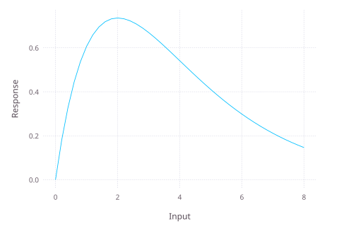
UnicodePlots
visualize(x, y;
backend = :UnicodePlots,
kind = :line, xlab = "Input", ylab = "Response", legend = false) ┌────────────────────────────────────────┐
1 │⠀⠀⠀⠀⠀⠀⠀⠀⠀⠀⠀⠀⠀⠀⠀⠀⠀⠀⠀⠀⠀⠀⠀⠀⠀⠀⠀⠀⠀⠀⠀⠀⠀⠀⠀⠀⠀⠀⠀⠀│
│⠀⠀⠀⠀⠀⠀⠀⠀⠀⠀⠀⠀⠀⠀⠀⠀⠀⠀⠀⠀⠀⠀⠀⠀⠀⠀⠀⠀⠀⠀⠀⠀⠀⠀⠀⠀⠀⠀⠀⠀│
│⠀⠀⠀⠀⠀⠀⠀⠀⠀⠀⠀⠀⠀⠀⠀⠀⠀⠀⠀⠀⠀⠀⠀⠀⠀⠀⠀⠀⠀⠀⠀⠀⠀⠀⠀⠀⠀⠀⠀⠀│
│⠀⠀⠀⠀⠀⠀⠀⠀⠀⢀⣀⠀⠀⠀⠀⠀⠀⠀⠀⠀⠀⠀⠀⠀⠀⠀⠀⠀⠀⠀⠀⠀⠀⠀⠀⠀⠀⠀⠀⠀│
│⠀⠀⠀⠀⠀⠀⡠⠔⠉⠁⠀⠉⠑⠢⢄⡀⠀⠀⠀⠀⠀⠀⠀⠀⠀⠀⠀⠀⠀⠀⠀⠀⠀⠀⠀⠀⠀⠀⠀⠀│
│⠀⠀⠀⠀⢀⡜⠁⠀⠀⠀⠀⠀⠀⠀⠀⠈⠒⢄⠀⠀⠀⠀⠀⠀⠀⠀⠀⠀⠀⠀⠀⠀⠀⠀⠀⠀⠀⠀⠀⠀│
│⠀⠀⠀⠀⡎⠀⠀⠀⠀⠀⠀⠀⠀⠀⠀⠀⠀⠀⠑⠢⡀⠀⠀⠀⠀⠀⠀⠀⠀⠀⠀⠀⠀⠀⠀⠀⠀⠀⠀⠀│
Response │⠀⠀⠀⡸⠀⠀⠀⠀⠀⠀⠀⠀⠀⠀⠀⠀⠀⠀⠀⠀⠈⠒⢄⠀⠀⠀⠀⠀⠀⠀⠀⠀⠀⠀⠀⠀⠀⠀⠀⠀│
│⠀⠀⢰⠃⠀⠀⠀⠀⠀⠀⠀⠀⠀⠀⠀⠀⠀⠀⠀⠀⠀⠀⠀⠑⠢⡀⠀⠀⠀⠀⠀⠀⠀⠀⠀⠀⠀⠀⠀⠀│
│⠀⠀⡎⠀⠀⠀⠀⠀⠀⠀⠀⠀⠀⠀⠀⠀⠀⠀⠀⠀⠀⠀⠀⠀⠀⠈⠑⠤⡀⠀⠀⠀⠀⠀⠀⠀⠀⠀⠀⠀│
│⠀⢰⠁⠀⠀⠀⠀⠀⠀⠀⠀⠀⠀⠀⠀⠀⠀⠀⠀⠀⠀⠀⠀⠀⠀⠀⠀⠀⠈⠑⠤⣀⠀⠀⠀⠀⠀⠀⠀⠀│
│⠀⡎⠀⠀⠀⠀⠀⠀⠀⠀⠀⠀⠀⠀⠀⠀⠀⠀⠀⠀⠀⠀⠀⠀⠀⠀⠀⠀⠀⠀⠀⠀⠉⠒⠤⣀⠀⠀⠀⠀│
│⢠⠃⠀⠀⠀⠀⠀⠀⠀⠀⠀⠀⠀⠀⠀⠀⠀⠀⠀⠀⠀⠀⠀⠀⠀⠀⠀⠀⠀⠀⠀⠀⠀⠀⠀⠀⠉⠒⠢⢤│
│⡸⠀⠀⠀⠀⠀⠀⠀⠀⠀⠀⠀⠀⠀⠀⠀⠀⠀⠀⠀⠀⠀⠀⠀⠀⠀⠀⠀⠀⠀⠀⠀⠀⠀⠀⠀⠀⠀⠀⠀│
0 │⡇⠀⠀⠀⠀⠀⠀⠀⠀⠀⠀⠀⠀⠀⠀⠀⠀⠀⠀⠀⠀⠀⠀⠀⠀⠀⠀⠀⠀⠀⠀⠀⠀⠀⠀⠀⠀⠀⠀⠀│
└────────────────────────────────────────┘
⠀0.0⠀⠀⠀⠀⠀⠀⠀⠀⠀⠀⠀⠀⠀⠀⠀⠀⠀⠀⠀⠀⠀⠀⠀⠀⠀⠀⠀⠀⠀⠀⠀⠀⠀⠀8.0⠀
⠀⠀⠀⠀⠀⠀⠀⠀⠀⠀⠀⠀⠀⠀⠀⠀⠀⠀⠀Input⠀⠀⠀⠀⠀⠀⠀⠀⠀⠀⠀⠀⠀⠀⠀⠀⠀⠀ DataFrames
This table contains a synthetic wetting–drying sequence. Date and DateTime columns retain calendar labels with either backend; no row-number conversion is needed.
water = DataFrame(
date = collect(Date(2026, 4, 1):Day(1):Date(2026, 4, 15)),
storage = [45, 40, 34, 28, 50, 44, 38, 33, 27, 22, 48, 42, 37, 31, 26]u"mm")
visualize(water, :date, :storage;
kind = :scatterline, xlab = "Date", ylab = "Soil water", legend = false)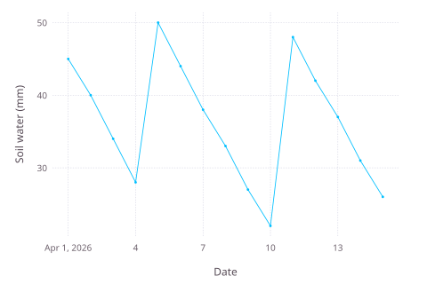
UnicodePlots
visualize(water, :date, :storage;
backend = :UnicodePlots,
kind = :scatterline, xlab = "Date", ylab = "Soil water", legend = false) ┌────────────────────────────────────────┐
50 │⠀⠀⠀⠀⠀⠀⠀⠀⠀⠀⠀⚬⡀⠀⠀⠀⠀⠀⠀⠀⠀⠀⠀⠀⠀⠀⠀⠀⠀⠀⠀⠀⠀⠀⠀⠀⠀⠀⠀⠀│
│⠀⠀⠀⠀⠀⠀⠀⠀⠀⠀⢀⠇⢱⠀⠀⠀⠀⠀⠀⠀⠀⠀⠀⠀⠀⠀⠀⠀⚬⡄⠀⠀⠀⠀⠀⠀⠀⠀⠀⠀│
│⚬⠀⠀⠀⠀⠀⠀⠀⠀⠀⢸⠀⠀⢣⠀⠀⠀⠀⠀⠀⠀⠀⠀⠀⠀⠀⠀⠀⡇⠱⡀⠀⠀⠀⠀⠀⠀⠀⠀⠀│
│⠘⡄⠀⠀⠀⠀⠀⠀⠀⠀⢸⠀⠀⠀⚬⠀⠀⠀⠀⠀⠀⠀⠀⠀⠀⠀⠀⠀⡇⠀⠱⡀⠀⠀⠀⠀⠀⠀⠀⠀│
│⠀⠘⡄⠀⠀⠀⠀⠀⠀⠀⡇⠀⠀⠀⠀⢣⠀⠀⠀⠀⠀⠀⠀⠀⠀⠀⠀⢸⠀⠀⠀⚬⠀⠀⠀⠀⠀⠀⠀⠀│
│⠀⠀⚬⡄⠀⠀⠀⠀⠀⠀⡇⠀⠀⠀⠀⠀⢣⠀⠀⠀⠀⠀⠀⠀⠀⠀⠀⢸⠀⠀⠀⠀⠣⡀⠀⠀⠀⠀⠀⠀│
│⠀⠀⠀⠸⡀⠀⠀⠀⠀⢸⠀⠀⠀⠀⠀⠀⠈⚬⠀⠀⠀⠀⠀⠀⠀⠀⠀⡜⠀⠀⠀⠀⠀⠱⚬⠀⠀⠀⠀⠀│
Soil water (mm) │⠀⠀⠀⠀⠱⡀⠀⠀⠀⢸⠀⠀⠀⠀⠀⠀⠀⠈⢆⠀⠀⠀⠀⠀⠀⠀⠀⡇⠀⠀⠀⠀⠀⠀⠸⡀⠀⠀⠀⠀│
│⠀⠀⠀⠀⠀⚬⠀⠀⠀⡇⠀⠀⠀⠀⠀⠀⠀⠀⠀⢣⠀⠀⠀⠀⠀⠀⢀⠇⠀⠀⠀⠀⠀⠀⠀⠱⡀⠀⠀⠀│
│⠀⠀⠀⠀⠀⠀⢣⠀⠀⡇⠀⠀⠀⠀⠀⠀⠀⠀⠀⠀⚬⠀⠀⠀⠀⠀⢸⠀⠀⠀⠀⠀⠀⠀⠀⠀⢱⠀⠀⠀│
│⠀⠀⠀⠀⠀⠀⠀⢇⢸⠀⠀⠀⠀⠀⠀⠀⠀⠀⠀⠀⠈⢆⠀⠀⠀⠀⢸⠀⠀⠀⠀⠀⠀⠀⠀⠀⠀⚬⠀⠀│
│⠀⠀⠀⠀⠀⠀⠀⠈⚬⠀⠀⠀⠀⠀⠀⠀⠀⠀⠀⠀⠀⠘⡄⠀⠀⠀⡎⠀⠀⠀⠀⠀⠀⠀⠀⠀⠀⠀⠣⡀│
│⠀⠀⠀⠀⠀⠀⠀⠀⠀⠀⠀⠀⠀⠀⠀⠀⠀⠀⠀⠀⠀⠀⚬⡄⠀⠀⡇⠀⠀⠀⠀⠀⠀⠀⠀⠀⠀⠀⠀⚬│
│⠀⠀⠀⠀⠀⠀⠀⠀⠀⠀⠀⠀⠀⠀⠀⠀⠀⠀⠀⠀⠀⠀⠀⠘⡄⢀⠇⠀⠀⠀⠀⠀⠀⠀⠀⠀⠀⠀⠀⠀│
22 │⠀⠀⠀⠀⠀⠀⠀⠀⠀⠀⠀⠀⠀⠀⠀⠀⠀⠀⠀⠀⠀⠀⠀⠀⠘⚬⠀⠀⠀⠀⠀⠀⠀⠀⠀⠀⠀⠀⠀⠀│
└────────────────────────────────────────┘
⠀2026-04-01⠀⠀⠀⠀⠀⠀⠀⠀⠀⠀⠀⠀⠀⠀⠀⠀⠀⠀⠀⠀2026-04-15⠀
⠀⠀⠀⠀⠀⠀⠀⠀⠀⠀⠀⠀⠀⠀⠀⠀⠀⠀⠀Date⠀⠀⠀⠀⠀⠀⠀⠀⠀⠀⠀⠀⠀⠀⠀⠀⠀⠀⠀ Multiple series
Passing several y columns draws several series. The vector equivalent is visualize(X, [Y1, Y2]). names controls their legend labels; legend is the legend title, not a Boolean switch for individual series.
Provide one entry per series in names and colors, or leave them as nothing to use the defaults. A mismatched length raises an ArgumentError instead of silently omitting series. This also applies to grouped curves and model comparisons.
visualize(series, :hour, [:observed, :smooth];
kind = :line,
names = ["observation", "reference"],
legend = "Series",
ylab = "Mass",
)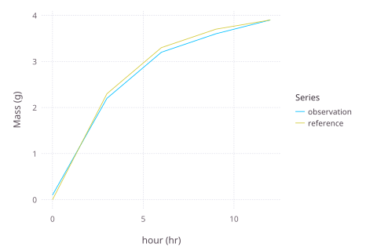
UnicodePlots
visualize(series, :hour, [:observed, :smooth];
backend = :UnicodePlots,
kind = :line,
names = ["observation", "reference"],
legend = "Series",
ylab = "Mass",
) ┌────────────────────────────────────────┐
4 │⠀⠀⠀⠀⠀⠀⠀⠀⠀⠀⠀⠀⠀⠀⠀⠀⠀⠀⠀⠀⠀⠀⠀⠀⠀⠀⠀⠀⠀⠀⠀⠀⣀⣀⣀⣤⣤⠤⠴⠒│ Series
│⠀⠀⠀⠀⠀⠀⠀⠀⠀⠀⠀⠀⠀⠀⠀⠀⠀⠀⠀⠀⠀⠀⠀⠀⢀⣀⠤⣔⡲⠮⠛⠛⠊⠉⠁⠀⠀⠀⠀⠀│ observation
│⠀⠀⠀⠀⠀⠀⠀⠀⠀⠀⠀⠀⠀⠀⠀⠀⠀⠀⠀⢀⣤⣒⠶⠝⠓⠉⠉⠀⠀⠀⠀⠀⠀⠀⠀⠀⠀⠀⠀⠀│ reference
│⠀⠀⠀⠀⠀⠀⠀⠀⠀⠀⠀⠀⠀⠀⠀⠀⢀⣠⠮⠋⠀⠀⠀⠀⠀⠀⠀⠀⠀⠀⠀⠀⠀⠀⠀⠀⠀⠀⠀⠀│
│⠀⠀⠀⠀⠀⠀⠀⠀⠀⠀⠀⠀⠀⠀⡠⡴⠓⠁⠀⠀⠀⠀⠀⠀⠀⠀⠀⠀⠀⠀⠀⠀⠀⠀⠀⠀⠀⠀⠀⠀│
│⠀⠀⠀⠀⠀⠀⠀⠀⠀⠀⠀⢀⣔⠞⠉⠀⠀⠀⠀⠀⠀⠀⠀⠀⠀⠀⠀⠀⠀⠀⠀⠀⠀⠀⠀⠀⠀⠀⠀⠀│
│⠀⠀⠀⠀⠀⠀⠀⠀⠀⢠⠮⠋⠀⠀⠀⠀⠀⠀⠀⠀⠀⠀⠀⠀⠀⠀⠀⠀⠀⠀⠀⠀⠀⠀⠀⠀⠀⠀⠀⠀│
Mass (g) │⠀⠀⠀⠀⠀⠀⠀⠀⣰⠋⠀⠀⠀⠀⠀⠀⠀⠀⠀⠀⠀⠀⠀⠀⠀⠀⠀⠀⠀⠀⠀⠀⠀⠀⠀⠀⠀⠀⠀⠀│
│⠀⠀⠀⠀⠀⠀⠀⡰⠁⠀⠀⠀⠀⠀⠀⠀⠀⠀⠀⠀⠀⠀⠀⠀⠀⠀⠀⠀⠀⠀⠀⠀⠀⠀⠀⠀⠀⠀⠀⠀│
│⠀⠀⠀⠀⠀⠀⡜⠀⠀⠀⠀⠀⠀⠀⠀⠀⠀⠀⠀⠀⠀⠀⠀⠀⠀⠀⠀⠀⠀⠀⠀⠀⠀⠀⠀⠀⠀⠀⠀⠀│
│⠀⠀⠀⠀⢀⠞⠀⠀⠀⠀⠀⠀⠀⠀⠀⠀⠀⠀⠀⠀⠀⠀⠀⠀⠀⠀⠀⠀⠀⠀⠀⠀⠀⠀⠀⠀⠀⠀⠀⠀│
│⠀⠀⠀⣠⠏⠀⠀⠀⠀⠀⠀⠀⠀⠀⠀⠀⠀⠀⠀⠀⠀⠀⠀⠀⠀⠀⠀⠀⠀⠀⠀⠀⠀⠀⠀⠀⠀⠀⠀⠀│
│⠀⠀⣰⠃⠀⠀⠀⠀⠀⠀⠀⠀⠀⠀⠀⠀⠀⠀⠀⠀⠀⠀⠀⠀⠀⠀⠀⠀⠀⠀⠀⠀⠀⠀⠀⠀⠀⠀⠀⠀│
│⢀⡼⠃⠀⠀⠀⠀⠀⠀⠀⠀⠀⠀⠀⠀⠀⠀⠀⠀⠀⠀⠀⠀⠀⠀⠀⠀⠀⠀⠀⠀⠀⠀⠀⠀⠀⠀⠀⠀⠀│
0 │⡾⠁⠀⠀⠀⠀⠀⠀⠀⠀⠀⠀⠀⠀⠀⠀⠀⠀⠀⠀⠀⠀⠀⠀⠀⠀⠀⠀⠀⠀⠀⠀⠀⠀⠀⠀⠀⠀⠀⠀│
└────────────────────────────────────────┘
⠀0⠀⠀⠀⠀⠀⠀⠀⠀⠀⠀⠀⠀⠀⠀⠀⠀⠀⠀⠀⠀⠀⠀⠀⠀⠀⠀⠀⠀⠀⠀⠀⠀⠀⠀⠀⠀⠀12⠀
⠀⠀⠀⠀⠀⠀⠀⠀⠀⠀⠀⠀⠀⠀⠀⠀⠀hour (hr)⠀⠀⠀⠀⠀⠀⠀⠀⠀⠀⠀⠀⠀⠀⠀⠀ Grouped DataFrames
Use group to split existing rows by one column or several columns. This does not run a simulation. Groups appear in first-occurrence order; their values provide the default legend labels.
grouped = simulate(Growth;
configs = @config(!(Growth => :rate => [1, 2, 3])),
stop = 12, verbose = false,
)
visualize(grouped, :time, :mass; group = :rate, kind = :line)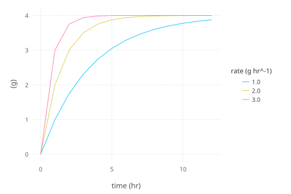
UnicodePlots
visualize(grouped, :time, :mass;
backend = :UnicodePlots,
group = :rate, kind = :line) ┌────────────────────────────────────────┐
4 │⠀⠀⠀⠀⠀⠀⢀⡠⠤⠒⠉⠉⠉⣉⡩⠭⠝⠛⠛⠛⠉⠉⠉⠉⠉⠉⠉⠉⠉⠉⠉⢉⣉⣉⡩⠭⠭⠭⠭⠝│ rate (g hr^-1)
│⠀⠀⠀⠀⠀⢠⠊⠀⠀⠀⡠⠔⠊⠁⠀⠀⠀⠀⠀⠀⠀⠀⠀⢀⣀⠤⠤⠒⠒⠉⠉⠁⠀⠀⠀⠀⠀⠀⠀⠀│ 1.0
│⠀⠀⠀⠀⢠⠃⠀⠀⡠⠊⠀⠀⠀⠀⠀⠀⠀⠀⠀⣀⠤⠒⠊⠁⠀⠀⠀⠀⠀⠀⠀⠀⠀⠀⠀⠀⠀⠀⠀⠀│ 2.0
│⠀⠀⠀⡰⠁⠀⢀⠔⠁⠀⠀⠀⠀⠀⠀⢀⠤⠒⠉⠀⠀⠀⠀⠀⠀⠀⠀⠀⠀⠀⠀⠀⠀⠀⠀⠀⠀⠀⠀⠀│ 3.0
│⠀⠀⠀⡇⠀⢀⠇⠀⠀⠀⠀⠀⠀⡤⠊⠁⠀⠀⠀⠀⠀⠀⠀⠀⠀⠀⠀⠀⠀⠀⠀⠀⠀⠀⠀⠀⠀⠀⠀⠀│
│⠀⠀⢸⠀⢀⠎⠀⠀⠀⠀⠀⡠⠊⠀⠀⠀⠀⠀⠀⠀⠀⠀⠀⠀⠀⠀⠀⠀⠀⠀⠀⠀⠀⠀⠀⠀⠀⠀⠀⠀│
│⠀⠀⡸⠀⡎⠀⠀⠀⠀⡔⠊⠀⠀⠀⠀⠀⠀⠀⠀⠀⠀⠀⠀⠀⠀⠀⠀⠀⠀⠀⠀⠀⠀⠀⠀⠀⠀⠀⠀⠀│
(g) │⠀⠀⡇⡜⠀⠀⠀⡠⠊⠀⠀⠀⠀⠀⠀⠀⠀⠀⠀⠀⠀⠀⠀⠀⠀⠀⠀⠀⠀⠀⠀⠀⠀⠀⠀⠀⠀⠀⠀⠀│
│⠀⢰⢡⠃⠀⠀⡰⠁⠀⠀⠀⠀⠀⠀⠀⠀⠀⠀⠀⠀⠀⠀⠀⠀⠀⠀⠀⠀⠀⠀⠀⠀⠀⠀⠀⠀⠀⠀⠀⠀│
│⠀⢸⡜⠀⠀⡜⠀⠀⠀⠀⠀⠀⠀⠀⠀⠀⠀⠀⠀⠀⠀⠀⠀⠀⠀⠀⠀⠀⠀⠀⠀⠀⠀⠀⠀⠀⠀⠀⠀⠀│
│⠀⣇⠇⢀⠜⠀⠀⠀⠀⠀⠀⠀⠀⠀⠀⠀⠀⠀⠀⠀⠀⠀⠀⠀⠀⠀⠀⠀⠀⠀⠀⠀⠀⠀⠀⠀⠀⠀⠀⠀│
│⢀⡿⢀⠎⠀⠀⠀⠀⠀⠀⠀⠀⠀⠀⠀⠀⠀⠀⠀⠀⠀⠀⠀⠀⠀⠀⠀⠀⠀⠀⠀⠀⠀⠀⠀⠀⠀⠀⠀⠀│
│⢸⡇⡎⠀⠀⠀⠀⠀⠀⠀⠀⠀⠀⠀⠀⠀⠀⠀⠀⠀⠀⠀⠀⠀⠀⠀⠀⠀⠀⠀⠀⠀⠀⠀⠀⠀⠀⠀⠀⠀│
│⣼⡜⠀⠀⠀⠀⠀⠀⠀⠀⠀⠀⠀⠀⠀⠀⠀⠀⠀⠀⠀⠀⠀⠀⠀⠀⠀⠀⠀⠀⠀⠀⠀⠀⠀⠀⠀⠀⠀⠀│
0 │⡟⠀⠀⠀⠀⠀⠀⠀⠀⠀⠀⠀⠀⠀⠀⠀⠀⠀⠀⠀⠀⠀⠀⠀⠀⠀⠀⠀⠀⠀⠀⠀⠀⠀⠀⠀⠀⠀⠀⠀│
└────────────────────────────────────────┘
⠀0//1⠀⠀⠀⠀⠀⠀⠀⠀⠀⠀⠀⠀⠀⠀⠀⠀⠀⠀⠀⠀⠀⠀⠀⠀⠀⠀⠀⠀⠀⠀⠀12//1⠀
⠀⠀⠀⠀⠀⠀⠀⠀⠀⠀⠀⠀⠀⠀⠀⠀⠀time (hr)⠀⠀⠀⠀⠀⠀⠀⠀⠀⠀⠀⠀⠀⠀⠀⠀ For example, group = [:site, :treatment] groups by both columns. With several y columns, each group contains one series per column, in the supplied order. Custom names and colors need one entry per resulting series. DataFrame views are also supported; the input table is not modified.
If simulate uses an explicit target, include the grouping columns in that selection, for example target = [:rate, :mass] before using group = :rate.
The keyword is the same for model and table inputs: group on a system expands configurations and simulates them, while group on a table selects columns.
Visualize a simulation
visualize(SystemType, x, y;
config = (), group = (), xstep = (),
base = nothing, stop = nothing, snap = nothing,
options...)This form calls simulate with x and y as output variables, then renders the result. The usual simulation meanings of base, stop, and snap apply.
visualize(Growth, :time, :mass;
config = Growth => :rate => 1,
stop = 12u"hr",
kind = :line,
ylab = "Mass",
legend = false,
)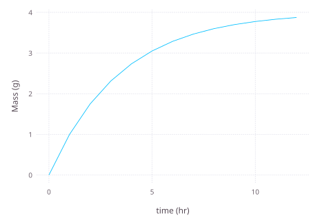
UnicodePlots
visualize(Growth, :time, :mass;
backend = :UnicodePlots,
config = Growth => :rate => 1,
stop = 12u"hr",
kind = :line,
ylab = "Mass",
legend = false,
) ┌────────────────────────────────────────┐
4 │⠀⠀⠀⠀⠀⠀⠀⠀⠀⠀⠀⠀⠀⠀⠀⠀⠀⠀⠀⠀⠀⠀⠀⠀⠀⠀⠀⠀⠀⠀⠀⢀⣀⣀⡠⠤⠤⠤⠤⠔│
│⠀⠀⠀⠀⠀⠀⠀⠀⠀⠀⠀⠀⠀⠀⠀⠀⠀⠀⠀⠀⠀⠀⠀⢀⣀⠤⠤⠒⠒⠉⠉⠁⠀⠀⠀⠀⠀⠀⠀⠀│
│⠀⠀⠀⠀⠀⠀⠀⠀⠀⠀⠀⠀⠀⠀⠀⠀⠀⠀⠀⣀⠤⠒⠊⠁⠀⠀⠀⠀⠀⠀⠀⠀⠀⠀⠀⠀⠀⠀⠀⠀│
│⠀⠀⠀⠀⠀⠀⠀⠀⠀⠀⠀⠀⠀⠀⠀⢀⠤⠒⠉⠀⠀⠀⠀⠀⠀⠀⠀⠀⠀⠀⠀⠀⠀⠀⠀⠀⠀⠀⠀⠀│
│⠀⠀⠀⠀⠀⠀⠀⠀⠀⠀⠀⠀⠀⡤⠊⠁⠀⠀⠀⠀⠀⠀⠀⠀⠀⠀⠀⠀⠀⠀⠀⠀⠀⠀⠀⠀⠀⠀⠀⠀│
│⠀⠀⠀⠀⠀⠀⠀⠀⠀⠀⠀⡠⠊⠀⠀⠀⠀⠀⠀⠀⠀⠀⠀⠀⠀⠀⠀⠀⠀⠀⠀⠀⠀⠀⠀⠀⠀⠀⠀⠀│
│⠀⠀⠀⠀⠀⠀⠀⠀⠀⡔⠊⠀⠀⠀⠀⠀⠀⠀⠀⠀⠀⠀⠀⠀⠀⠀⠀⠀⠀⠀⠀⠀⠀⠀⠀⠀⠀⠀⠀⠀│
Mass (g) │⠀⠀⠀⠀⠀⠀⠀⡠⠊⠀⠀⠀⠀⠀⠀⠀⠀⠀⠀⠀⠀⠀⠀⠀⠀⠀⠀⠀⠀⠀⠀⠀⠀⠀⠀⠀⠀⠀⠀⠀│
│⠀⠀⠀⠀⠀⠀⡰⠁⠀⠀⠀⠀⠀⠀⠀⠀⠀⠀⠀⠀⠀⠀⠀⠀⠀⠀⠀⠀⠀⠀⠀⠀⠀⠀⠀⠀⠀⠀⠀⠀│
│⠀⠀⠀⠀⠀⡜⠀⠀⠀⠀⠀⠀⠀⠀⠀⠀⠀⠀⠀⠀⠀⠀⠀⠀⠀⠀⠀⠀⠀⠀⠀⠀⠀⠀⠀⠀⠀⠀⠀⠀│
│⠀⠀⠀⢀⠜⠀⠀⠀⠀⠀⠀⠀⠀⠀⠀⠀⠀⠀⠀⠀⠀⠀⠀⠀⠀⠀⠀⠀⠀⠀⠀⠀⠀⠀⠀⠀⠀⠀⠀⠀│
│⠀⠀⢀⠎⠀⠀⠀⠀⠀⠀⠀⠀⠀⠀⠀⠀⠀⠀⠀⠀⠀⠀⠀⠀⠀⠀⠀⠀⠀⠀⠀⠀⠀⠀⠀⠀⠀⠀⠀⠀│
│⠀⠀⡎⠀⠀⠀⠀⠀⠀⠀⠀⠀⠀⠀⠀⠀⠀⠀⠀⠀⠀⠀⠀⠀⠀⠀⠀⠀⠀⠀⠀⠀⠀⠀⠀⠀⠀⠀⠀⠀│
│⠀⡜⠀⠀⠀⠀⠀⠀⠀⠀⠀⠀⠀⠀⠀⠀⠀⠀⠀⠀⠀⠀⠀⠀⠀⠀⠀⠀⠀⠀⠀⠀⠀⠀⠀⠀⠀⠀⠀⠀│
0 │⡜⠀⠀⠀⠀⠀⠀⠀⠀⠀⠀⠀⠀⠀⠀⠀⠀⠀⠀⠀⠀⠀⠀⠀⠀⠀⠀⠀⠀⠀⠀⠀⠀⠀⠀⠀⠀⠀⠀⠀│
└────────────────────────────────────────┘
⠀0//1⠀⠀⠀⠀⠀⠀⠀⠀⠀⠀⠀⠀⠀⠀⠀⠀⠀⠀⠀⠀⠀⠀⠀⠀⠀⠀⠀⠀⠀⠀⠀12//1⠀
⠀⠀⠀⠀⠀⠀⠀⠀⠀⠀⠀⠀⠀⠀⠀⠀⠀time (hr)⠀⠀⠀⠀⠀⠀⠀⠀⠀⠀⠀⠀⠀⠀⠀⠀ Multiple model outputs
When y is a vector, all targets are drawn from the same simulation output. This is the form used for leaf gas-exchange limitation rates, garlic organ mass, and soil-water components in the tutorials.
@system Partition(Growth) begin
leaf_mass(mass) => 0.6mass ~ track(u"g")
bulb_mass(mass) => 0.4mass ~ track(u"g")
end
visualize(Partition, :time, [:leaf_mass, :bulb_mass, :mass];
stop = 12u"hr",
kind = :line,
names = ["leaf", "bulb", "total"],
ylab = "Mass",
)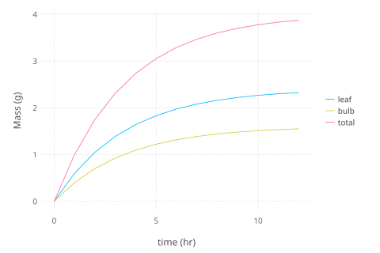
UnicodePlots
visualize(Partition, :time, [:leaf_mass, :bulb_mass, :mass];
backend = :UnicodePlots,
stop = 12u"hr",
kind = :line,
names = ["leaf", "bulb", "total"],
ylab = "Mass",
) ┌────────────────────────────────────────┐
4 │⠀⠀⠀⠀⠀⠀⠀⠀⠀⠀⠀⠀⠀⠀⠀⠀⠀⠀⠀⠀⠀⠀⠀⠀⠀⠀⠀⠀⠀⠀⠀⢀⣀⣀⡠⠤⠤⠤⠤⠔│ leaf
│⠀⠀⠀⠀⠀⠀⠀⠀⠀⠀⠀⠀⠀⠀⠀⠀⠀⠀⠀⠀⠀⠀⠀⢀⣀⠤⠤⠒⠒⠉⠉⠁⠀⠀⠀⠀⠀⠀⠀⠀│ bulb
│⠀⠀⠀⠀⠀⠀⠀⠀⠀⠀⠀⠀⠀⠀⠀⠀⠀⠀⠀⣀⠤⠒⠊⠁⠀⠀⠀⠀⠀⠀⠀⠀⠀⠀⠀⠀⠀⠀⠀⠀│ total
│⠀⠀⠀⠀⠀⠀⠀⠀⠀⠀⠀⠀⠀⠀⠀⢀⠤⠒⠉⠀⠀⠀⠀⠀⠀⠀⠀⠀⠀⠀⠀⠀⠀⠀⠀⠀⠀⠀⠀⠀│
│⠀⠀⠀⠀⠀⠀⠀⠀⠀⠀⠀⠀⠀⡤⠊⠁⠀⠀⠀⠀⠀⠀⠀⠀⠀⠀⠀⠀⠀⠀⠀⠀⠀⠀⠀⠀⠀⠀⠀⠀│
│⠀⠀⠀⠀⠀⠀⠀⠀⠀⠀⠀⡠⠊⠀⠀⠀⠀⠀⠀⠀⠀⠀⠀⠀⠀⠀⠀⠀⠀⠀⠀⠀⠀⠀⠀⠀⠀⠀⠀⠀│
│⠀⠀⠀⠀⠀⠀⠀⠀⠀⡔⠊⠀⠀⠀⠀⠀⠀⠀⠀⠀⠀⠀⠀⠀⠀⢀⣀⣀⣀⠤⠤⠤⠤⠔⠒⠒⠒⠒⠒⠒│
Mass (g) │⠀⠀⠀⠀⠀⠀⠀⡠⠊⠀⠀⠀⠀⠀⠀⠀⠀⢀⣀⠤⠤⠒⠒⠉⠉⠁⠀⠀⠀⠀⠀⠀⠀⠀⠀⠀⠀⠀⠀⠀│
│⠀⠀⠀⠀⠀⠀⡰⠁⠀⠀⠀⠀⠀⡠⠤⠒⠉⠁⠀⠀⠀⠀⠀⠀⠀⠀⠀⠀⠀⠀⠀⠀⠀⠀⠀⠀⠀⠀⠀⠀│
│⠀⠀⠀⠀⠀⡜⠀⠀⠀⢀⡠⠔⠉⠀⠀⠀⠀⠀⠀⠀⠀⣀⣀⣀⠤⠤⠤⠤⠤⠒⠒⠒⠒⠒⠒⠒⠒⠉⠉⠉│
│⠀⠀⠀⢀⠜⠀⠀⡠⠒⠁⠀⠀⠀⣀⡠⠤⠒⠒⠊⠉⠉⠀⠀⠀⠀⠀⠀⠀⠀⠀⠀⠀⠀⠀⠀⠀⠀⠀⠀⠀│
│⠀⠀⢀⠎⠀⡠⠊⠀⣀⠤⠔⠊⠉⠀⠀⠀⠀⠀⠀⠀⠀⠀⠀⠀⠀⠀⠀⠀⠀⠀⠀⠀⠀⠀⠀⠀⠀⠀⠀⠀│
│⠀⠀⡎⡠⢊⡠⠒⠉⠀⠀⠀⠀⠀⠀⠀⠀⠀⠀⠀⠀⠀⠀⠀⠀⠀⠀⠀⠀⠀⠀⠀⠀⠀⠀⠀⠀⠀⠀⠀⠀│
│⠀⣜⢜⠔⠁⠀⠀⠀⠀⠀⠀⠀⠀⠀⠀⠀⠀⠀⠀⠀⠀⠀⠀⠀⠀⠀⠀⠀⠀⠀⠀⠀⠀⠀⠀⠀⠀⠀⠀⠀│
0 │⣼⠗⠁⠀⠀⠀⠀⠀⠀⠀⠀⠀⠀⠀⠀⠀⠀⠀⠀⠀⠀⠀⠀⠀⠀⠀⠀⠀⠀⠀⠀⠀⠀⠀⠀⠀⠀⠀⠀⠀│
└────────────────────────────────────────┘
⠀0//1⠀⠀⠀⠀⠀⠀⠀⠀⠀⠀⠀⠀⠀⠀⠀⠀⠀⠀⠀⠀⠀⠀⠀⠀⠀⠀⠀⠀⠀⠀⠀12//1⠀
⠀⠀⠀⠀⠀⠀⠀⠀⠀⠀⠀⠀⠀⠀⠀⠀⠀time (hr)⠀⠀⠀⠀⠀⠀⠀⠀⠀⠀⠀⠀⠀⠀⠀⠀ Parameter response curves
xstep varies the variable used on the x-axis. group makes one series for each value of another parameter. Both accept the same system-to-parameter pair shape used by @config.
visualize(Response, :input, :response;
xstep = Response => :input => 0:0.25:4,
group = Response => :slope => [0.5, 1.0, 1.5],
kind = :line,
ylab = "Response",
)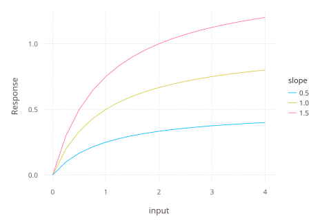
UnicodePlots
visualize(Response, :input, :response;
backend = :UnicodePlots,
xstep = Response => :input => 0:0.25:4,
group = Response => :slope => [0.5, 1.0, 1.5],
kind = :line,
ylab = "Response",
) ┌────────────────────────────────────────┐
2 │⠀⠀⠀⠀⠀⠀⠀⠀⠀⠀⠀⠀⠀⠀⠀⠀⠀⠀⠀⠀⠀⠀⠀⠀⠀⠀⠀⠀⠀⠀⠀⠀⠀⠀⠀⠀⠀⠀⠀⠀│ slope
│⠀⠀⠀⠀⠀⠀⠀⠀⠀⠀⠀⠀⠀⠀⠀⠀⠀⠀⠀⠀⠀⠀⠀⠀⠀⠀⠀⠀⠀⠀⠀⠀⠀⠀⠀⠀⠀⠀⠀⠀│ 0.5
│⠀⠀⠀⠀⠀⠀⠀⠀⠀⠀⠀⠀⠀⠀⠀⠀⠀⠀⠀⠀⠀⠀⠀⠀⠀⠀⠀⠀⠀⠀⠀⠀⠀⠀⠀⠀⠀⠀⠀⠀│ 1.0
│⠀⠀⠀⠀⠀⠀⠀⠀⠀⠀⠀⠀⠀⠀⠀⠀⠀⠀⠀⠀⠀⠀⠀⠀⠀⠀⠀⠀⠀⠀⠀⠀⠀⠀⠀⠀⠀⠀⠀⠀│ 1.5
│⠀⠀⠀⠀⠀⠀⠀⠀⠀⠀⠀⠀⠀⠀⠀⠀⠀⠀⠀⠀⠀⠀⠀⠀⠀⠀⠀⠀⠀⠀⠀⠀⠀⠀⠀⠀⠀⠀⠀⠀│
│⠀⠀⠀⠀⠀⠀⠀⠀⠀⠀⠀⠀⠀⠀⠀⠀⠀⠀⠀⠀⠀⠀⠀⠀⠀⠀⠀⠀⠀⠀⠀⠀⠀⠀⠀⠀⠀⠀⠀⠀│
│⠀⠀⠀⠀⠀⠀⠀⠀⠀⠀⠀⠀⠀⠀⠀⠀⠀⠀⠀⠀⠀⠀⠀⠀⠀⣀⣀⣠⠤⠤⠤⠒⠒⠒⠒⠋⠉⠉⠉⠉│
Response │⠀⠀⠀⠀⠀⠀⠀⠀⠀⠀⠀⠀⠀⠀⠀⠀⠀⣀⡠⠤⠖⠒⠊⠉⠉⠀⠀⠀⠀⠀⠀⠀⠀⠀⠀⠀⠀⠀⠀⠀│
│⠀⠀⠀⠀⠀⠀⠀⠀⠀⠀⠀⠀⣠⠤⠒⠊⠉⠀⠀⠀⠀⠀⠀⠀⠀⠀⠀⠀⠀⠀⠀⠀⠀⠀⠀⠀⠀⠀⠀⠀│
│⠀⠀⠀⠀⠀⠀⠀⠀⢀⠤⠒⠉⠀⠀⠀⠀⠀⠀⠀⠀⢀⣀⣀⡠⠤⠤⠤⠤⠒⠒⠒⠒⠒⠉⠉⠉⠉⠉⠉⠉│
│⠀⠀⠀⠀⠀⠀⡠⠊⠁⠀⠀⢀⣀⡠⠤⠔⠒⠊⠉⠉⠁⠀⠀⠀⠀⠀⠀⠀⠀⠀⠀⠀⠀⠀⠀⠀⠀⠀⠀⠀│
│⠀⠀⠀⠀⡠⠊⠀⣀⠤⠒⠋⠁⠀⠀⠀⠀⠀⠀⠀⠀⠀⠀⠀⠀⠀⠀⠀⠀⠀⠀⠀⠀⠀⠀⠀⠀⠀⠀⠀⢀│
│⠀⠀⣠⠊⡠⠔⠉⠀⠀⠀⠀⠀⣀⣀⣀⡠⠤⠤⠤⠤⠖⠒⠒⠒⠒⠒⠒⠒⠉⠉⠉⠉⠉⠉⠉⠉⠉⠉⠉⠉│
│⠀⡰⡡⠊⣀⡠⠤⠒⠒⠉⠉⠉⠀⠀⠀⠀⠀⠀⠀⠀⠀⠀⠀⠀⠀⠀⠀⠀⠀⠀⠀⠀⠀⠀⠀⠀⠀⠀⠀⠀│
0 │⣰⠯⠚⠉⠀⠀⠀⠀⠀⠀⠀⠀⠀⠀⠀⠀⠀⠀⠀⠀⠀⠀⠀⠀⠀⠀⠀⠀⠀⠀⠀⠀⠀⠀⠀⠀⠀⠀⠀⠀│
└────────────────────────────────────────┘
⠀0.0⠀⠀⠀⠀⠀⠀⠀⠀⠀⠀⠀⠀⠀⠀⠀⠀⠀⠀⠀⠀⠀⠀⠀⠀⠀⠀⠀⠀⠀⠀⠀⠀⠀⠀4.0⠀
⠀⠀⠀⠀⠀⠀⠀⠀⠀⠀⠀⠀⠀⠀⠀⠀⠀⠀⠀input⠀⠀⠀⠀⠀⠀⠀⠀⠀⠀⠀⠀⠀⠀⠀⠀⠀⠀ For a grouped curve, the group parameter becomes the default legend title and its values become the series labels. Pass names and legend to replace them. If names is a symbol, Cropbox reads the unique value of that output column and uses it as each label. The latter is useful when a label is determined indirectly by configuration.
Use xstep with a static or snapshot-like response. If the system advances for many steps, every snapshot from every configuration is placed in the same curve; in that case it is usually clearer to call simulate, select the desired time rows, and plot the resulting table.
Compare systems
Pass a vector of system types to compare compatible outputs. configs, names, and colors are parallel vectors and must match the systems in order.
@system FastGrowth(Growth) begin
rate => 1.5 ~ preserve(parameter, u"g/hr")
end
visualize([Growth, FastGrowth], :time, :mass;
configs = [(), ()],
names = ["baseline", "fast"],
colors = [:steelblue, :darkorange],
stop = 12u"hr",
kind = :line,
)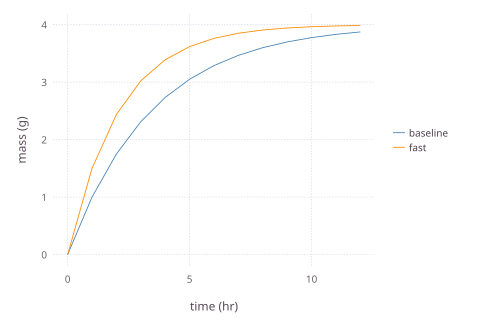
UnicodePlots
visualize([Growth, FastGrowth], :time, :mass;
backend = :UnicodePlots,
configs = [(), ()],
names = ["baseline", "fast"],
colors = [:blue, :yellow],
stop = 12u"hr",
kind = :line,
) ┌────────────────────────────────────────┐
4 │⠀⠀⠀⠀⠀⠀⠀⠀⠀⠀⠀⠀⠀⠀⠀⠀⠀⠀⠀⢀⣀⡠⠤⠤⠒⠒⠒⠒⠒⠊⠉⢉⣉⣉⡩⠭⠭⠭⠭⠝│ baseline
│⠀⠀⠀⠀⠀⠀⠀⠀⠀⠀⠀⠀⠀⠀⢀⡠⠔⠒⠉⠁⠀⠀⠀⢀⣀⠤⠤⠒⠒⠉⠉⠁⠀⠀⠀⠀⠀⠀⠀⠀│ fast
│⠀⠀⠀⠀⠀⠀⠀⠀⠀⠀⠀⠀⡠⠊⠁⠀⠀⠀⠀⣀⠤⠒⠊⠁⠀⠀⠀⠀⠀⠀⠀⠀⠀⠀⠀⠀⠀⠀⠀⠀│
│⠀⠀⠀⠀⠀⠀⠀⠀⠀⢀⠔⠊⠀⠀⠀⢀⠤⠒⠉⠀⠀⠀⠀⠀⠀⠀⠀⠀⠀⠀⠀⠀⠀⠀⠀⠀⠀⠀⠀⠀│
│⠀⠀⠀⠀⠀⠀⠀⠀⡰⠁⠀⠀⠀⡤⠊⠁⠀⠀⠀⠀⠀⠀⠀⠀⠀⠀⠀⠀⠀⠀⠀⠀⠀⠀⠀⠀⠀⠀⠀⠀│
│⠀⠀⠀⠀⠀⠀⢀⠎⠀⠀⠀⡠⠊⠀⠀⠀⠀⠀⠀⠀⠀⠀⠀⠀⠀⠀⠀⠀⠀⠀⠀⠀⠀⠀⠀⠀⠀⠀⠀⠀│
│⠀⠀⠀⠀⠀⢠⠃⠀⠀⡔⠊⠀⠀⠀⠀⠀⠀⠀⠀⠀⠀⠀⠀⠀⠀⠀⠀⠀⠀⠀⠀⠀⠀⠀⠀⠀⠀⠀⠀⠀│
mass (g) │⠀⠀⠀⠀⢠⠃⠀⡠⠊⠀⠀⠀⠀⠀⠀⠀⠀⠀⠀⠀⠀⠀⠀⠀⠀⠀⠀⠀⠀⠀⠀⠀⠀⠀⠀⠀⠀⠀⠀⠀│
│⠀⠀⠀⢀⠎⠀⡰⠁⠀⠀⠀⠀⠀⠀⠀⠀⠀⠀⠀⠀⠀⠀⠀⠀⠀⠀⠀⠀⠀⠀⠀⠀⠀⠀⠀⠀⠀⠀⠀⠀│
│⠀⠀⠀⡎⠀⡜⠀⠀⠀⠀⠀⠀⠀⠀⠀⠀⠀⠀⠀⠀⠀⠀⠀⠀⠀⠀⠀⠀⠀⠀⠀⠀⠀⠀⠀⠀⠀⠀⠀⠀│
│⠀⠀⢸⢀⠜⠀⠀⠀⠀⠀⠀⠀⠀⠀⠀⠀⠀⠀⠀⠀⠀⠀⠀⠀⠀⠀⠀⠀⠀⠀⠀⠀⠀⠀⠀⠀⠀⠀⠀⠀│
│⠀⢀⢇⠎⠀⠀⠀⠀⠀⠀⠀⠀⠀⠀⠀⠀⠀⠀⠀⠀⠀⠀⠀⠀⠀⠀⠀⠀⠀⠀⠀⠀⠀⠀⠀⠀⠀⠀⠀⠀│
│⠀⡜⡎⠀⠀⠀⠀⠀⠀⠀⠀⠀⠀⠀⠀⠀⠀⠀⠀⠀⠀⠀⠀⠀⠀⠀⠀⠀⠀⠀⠀⠀⠀⠀⠀⠀⠀⠀⠀⠀│
│⢠⡟⠀⠀⠀⠀⠀⠀⠀⠀⠀⠀⠀⠀⠀⠀⠀⠀⠀⠀⠀⠀⠀⠀⠀⠀⠀⠀⠀⠀⠀⠀⠀⠀⠀⠀⠀⠀⠀⠀│
0 │⡞⠀⠀⠀⠀⠀⠀⠀⠀⠀⠀⠀⠀⠀⠀⠀⠀⠀⠀⠀⠀⠀⠀⠀⠀⠀⠀⠀⠀⠀⠀⠀⠀⠀⠀⠀⠀⠀⠀⠀│
└────────────────────────────────────────┘
⠀0//1⠀⠀⠀⠀⠀⠀⠀⠀⠀⠀⠀⠀⠀⠀⠀⠀⠀⠀⠀⠀⠀⠀⠀⠀⠀⠀⠀⠀⠀⠀⠀12//1⠀
⠀⠀⠀⠀⠀⠀⠀⠀⠀⠀⠀⠀⠀⠀⠀⠀⠀time (hr)⠀⠀⠀⠀⠀⠀⠀⠀⠀⠀⠀⠀⠀⠀⠀⠀ The systems do not need to share an implementation, but each must expose the requested x and y paths. Omit configs, or leave it empty, to use an empty configuration for every system. Supply a parallel vector explicitly when the positional pairing should be especially clear in teaching or analysis code.
Append simulations with visualize!
Use the mutating form when the layers are assembled conditionally or at different points in an analysis. nothing is accepted as the initial plot, but starting with visualize is usually easier to read.
p = visualize(Growth, :time, :mass;
config = Growth => :rate => 1,
stop = 12u"hr",
kind = :line,
names = ["baseline"],
legend = "Model",
colors = [:steelblue],
)
visualize!(p, FastGrowth, :time, :mass;
stop = 12u"hr",
kind = :line,
names = ["fast"],
colors = [:darkorange],
)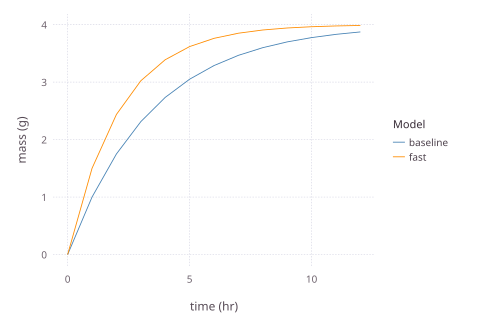
UnicodePlots
q = visualize(Growth, :time, :mass;
backend = :UnicodePlots,
xlim = (0, 12), ylim = (0, 4),
config = Growth => :rate => 1,
stop = 12u"hr",
kind = :line,
names = ["baseline"],
legend = "Model",
colors = [:blue],
)
visualize!(q, FastGrowth, :time, :mass;
stop = 12u"hr",
kind = :line,
names = ["fast"],
colors = [:yellow],
) ┌────────────────────────────────────────┐
4 │⠀⠀⠀⠀⠀⠀⠀⠀⠀⠀⠀⠀⠀⠀⠀⠀⠀⠀⠀⢀⣀⡠⠤⠤⠒⠒⠒⠒⠒⠊⠉⢉⣉⣉⡩⠭⠭⠭⠭⠝│ Model
│⠀⠀⠀⠀⠀⠀⠀⠀⠀⠀⠀⠀⠀⠀⢀⡠⠔⠒⠉⠁⠀⠀⠀⢀⣀⠤⠤⠒⠒⠉⠉⠁⠀⠀⠀⠀⠀⠀⠀⠀│ baseline
│⠀⠀⠀⠀⠀⠀⠀⠀⠀⠀⠀⠀⡠⠊⠁⠀⠀⠀⠀⣀⠤⠒⠊⠁⠀⠀⠀⠀⠀⠀⠀⠀⠀⠀⠀⠀⠀⠀⠀⠀│ fast
│⠀⠀⠀⠀⠀⠀⠀⠀⠀⢀⠔⠊⠀⠀⠀⢀⠤⠒⠉⠀⠀⠀⠀⠀⠀⠀⠀⠀⠀⠀⠀⠀⠀⠀⠀⠀⠀⠀⠀⠀│
│⠀⠀⠀⠀⠀⠀⠀⠀⡰⠁⠀⠀⠀⡤⠊⠁⠀⠀⠀⠀⠀⠀⠀⠀⠀⠀⠀⠀⠀⠀⠀⠀⠀⠀⠀⠀⠀⠀⠀⠀│
│⠀⠀⠀⠀⠀⠀⢀⠎⠀⠀⠀⡠⠊⠀⠀⠀⠀⠀⠀⠀⠀⠀⠀⠀⠀⠀⠀⠀⠀⠀⠀⠀⠀⠀⠀⠀⠀⠀⠀⠀│
│⠀⠀⠀⠀⠀⢠⠃⠀⠀⡔⠊⠀⠀⠀⠀⠀⠀⠀⠀⠀⠀⠀⠀⠀⠀⠀⠀⠀⠀⠀⠀⠀⠀⠀⠀⠀⠀⠀⠀⠀│
mass (g) │⠀⠀⠀⠀⢠⠃⠀⡠⠊⠀⠀⠀⠀⠀⠀⠀⠀⠀⠀⠀⠀⠀⠀⠀⠀⠀⠀⠀⠀⠀⠀⠀⠀⠀⠀⠀⠀⠀⠀⠀│
│⠀⠀⠀⢀⠎⠀⡰⠁⠀⠀⠀⠀⠀⠀⠀⠀⠀⠀⠀⠀⠀⠀⠀⠀⠀⠀⠀⠀⠀⠀⠀⠀⠀⠀⠀⠀⠀⠀⠀⠀│
│⠀⠀⠀⡎⠀⡜⠀⠀⠀⠀⠀⠀⠀⠀⠀⠀⠀⠀⠀⠀⠀⠀⠀⠀⠀⠀⠀⠀⠀⠀⠀⠀⠀⠀⠀⠀⠀⠀⠀⠀│
│⠀⠀⢸⢀⠜⠀⠀⠀⠀⠀⠀⠀⠀⠀⠀⠀⠀⠀⠀⠀⠀⠀⠀⠀⠀⠀⠀⠀⠀⠀⠀⠀⠀⠀⠀⠀⠀⠀⠀⠀│
│⠀⢀⢇⠎⠀⠀⠀⠀⠀⠀⠀⠀⠀⠀⠀⠀⠀⠀⠀⠀⠀⠀⠀⠀⠀⠀⠀⠀⠀⠀⠀⠀⠀⠀⠀⠀⠀⠀⠀⠀│
│⠀⡜⡎⠀⠀⠀⠀⠀⠀⠀⠀⠀⠀⠀⠀⠀⠀⠀⠀⠀⠀⠀⠀⠀⠀⠀⠀⠀⠀⠀⠀⠀⠀⠀⠀⠀⠀⠀⠀⠀│
│⢠⡟⠀⠀⠀⠀⠀⠀⠀⠀⠀⠀⠀⠀⠀⠀⠀⠀⠀⠀⠀⠀⠀⠀⠀⠀⠀⠀⠀⠀⠀⠀⠀⠀⠀⠀⠀⠀⠀⠀│
0 │⡞⠀⠀⠀⠀⠀⠀⠀⠀⠀⠀⠀⠀⠀⠀⠀⠀⠀⠀⠀⠀⠀⠀⠀⠀⠀⠀⠀⠀⠀⠀⠀⠀⠀⠀⠀⠀⠀⠀⠀│
└────────────────────────────────────────┘
⠀0⠀⠀⠀⠀⠀⠀⠀⠀⠀⠀⠀⠀⠀⠀⠀⠀⠀⠀⠀⠀⠀⠀⠀⠀⠀⠀⠀⠀⠀⠀⠀⠀⠀⠀⠀⠀⠀12⠀
⠀⠀⠀⠀⠀⠀⠀⠀⠀⠀⠀⠀⠀⠀⠀⠀⠀time (hr)⠀⠀⠀⠀⠀⠀⠀⠀⠀⠀⠀⠀⠀⠀⠀⠀ All appended layers must use compatible axis units. visualize! does not retain a simulation table, so call simulate explicitly when those values are needed for later statistics or export.
Appended calls inherit the existing backend and legend position. There is no need to repeat backend; explicitly selecting a different backend for an existing visualization is an error.
Observations and model estimates
There are two distinct comparison plots.
Overlay trajectories
visualize(observations, SystemType, obs_x => model_x, obs_y => model_y;
config, stop, options...)Cropbox draws observations as points and model output as a line. Pairs map differently named columns; omit the pairs when both names already match.
observations = DataFrame(
hour = (0:3:12)u"hr",
measured = [0.1, 2.2, 3.2, 3.6, 3.9]u"g",
)
visualize(observations,
Growth,
:hour => :time,
:measured => :mass;
config = Growth => :rate => 1,
stop = 12u"hr",
name = "observation",
names = ["model"],
ylab = "Mass",
)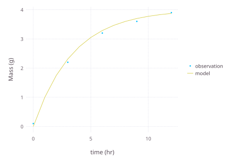
UnicodePlots
visualize(observations,
Growth,
:hour => :time,
:measured => :mass;
backend = :UnicodePlots,
config = Growth => :rate => 1,
stop = 12u"hr",
name = "observation",
names = ["model"],
ylab = "Mass",
) ┌────────────────────────────────────────┐
4 │⠀⠀⠀⠀⠀⠀⠀⠀⠀⠀⠀⠀⠀⠀⠀⠀⠀⠀⠀⠀⠀⠀⠀⠀⠀⠀⠀⠀⠀⠀⠀⢀⣀⣀⡠⠤⠤⠤⠤⠔│ observation
│⠀⠀⠀⠀⠀⠀⠀⠀⠀⠀⠀⠀⠀⠀⠀⠀⠀⠀⠀⠀⠀⠀⠀⢀⣀⠤⠤⠒⠒⠉⠋⠁⠀⠀⠀⠀⠀⠀⠀⠀│ model
│⠀⠀⠀⠀⠀⠀⠀⠀⠀⠀⠀⠀⠀⠀⠀⠀⠀⠀⠀⣀⡤⠒⠊⠁⠀⠀⠀⠀⠀⠀⠀⠀⠀⠀⠀⠀⠀⠀⠀⠀│
│⠀⠀⠀⠀⠀⠀⠀⠀⠀⠀⠀⠀⠀⠀⠀⢀⠤⠒⠉⠀⠀⠀⠀⠀⠀⠀⠀⠀⠀⠀⠀⠀⠀⠀⠀⠀⠀⠀⠀⠀│
│⠀⠀⠀⠀⠀⠀⠀⠀⠀⠀⠀⠀⠀⡤⠊⠁⠀⠀⠀⠀⠀⠀⠀⠀⠀⠀⠀⠀⠀⠀⠀⠀⠀⠀⠀⠀⠀⠀⠀⠀│
│⠀⠀⠀⠀⠀⠀⠀⠀⠀⠀⠀⡠⠊⠀⠀⠀⠀⠀⠀⠀⠀⠀⠀⠀⠀⠀⠀⠀⠀⠀⠀⠀⠀⠀⠀⠀⠀⠀⠀⠀│
│⠀⠀⠀⠀⠀⠀⠀⠀⠀⡔⠎⠀⠀⠀⠀⠀⠀⠀⠀⠀⠀⠀⠀⠀⠀⠀⠀⠀⠀⠀⠀⠀⠀⠀⠀⠀⠀⠀⠀⠀│
Mass (g) │⠀⠀⠀⠀⠀⠀⠀⡠⠊⠀⠀⠀⠀⠀⠀⠀⠀⠀⠀⠀⠀⠀⠀⠀⠀⠀⠀⠀⠀⠀⠀⠀⠀⠀⠀⠀⠀⠀⠀⠀│
│⠀⠀⠀⠀⠀⠀⡰⠁⠀⠀⠀⠀⠀⠀⠀⠀⠀⠀⠀⠀⠀⠀⠀⠀⠀⠀⠀⠀⠀⠀⠀⠀⠀⠀⠀⠀⠀⠀⠀⠀│
│⠀⠀⠀⠀⠀⡜⠀⠀⠀⠀⠀⠀⠀⠀⠀⠀⠀⠀⠀⠀⠀⠀⠀⠀⠀⠀⠀⠀⠀⠀⠀⠀⠀⠀⠀⠀⠀⠀⠀⠀│
│⠀⠀⠀⢀⠜⠀⠀⠀⠀⠀⠀⠀⠀⠀⠀⠀⠀⠀⠀⠀⠀⠀⠀⠀⠀⠀⠀⠀⠀⠀⠀⠀⠀⠀⠀⠀⠀⠀⠀⠀│
│⠀⠀⢀⠎⠀⠀⠀⠀⠀⠀⠀⠀⠀⠀⠀⠀⠀⠀⠀⠀⠀⠀⠀⠀⠀⠀⠀⠀⠀⠀⠀⠀⠀⠀⠀⠀⠀⠀⠀⠀│
│⠀⠀⡎⠀⠀⠀⠀⠀⠀⠀⠀⠀⠀⠀⠀⠀⠀⠀⠀⠀⠀⠀⠀⠀⠀⠀⠀⠀⠀⠀⠀⠀⠀⠀⠀⠀⠀⠀⠀⠀│
│⠀⡜⠀⠀⠀⠀⠀⠀⠀⠀⠀⠀⠀⠀⠀⠀⠀⠀⠀⠀⠀⠀⠀⠀⠀⠀⠀⠀⠀⠀⠀⠀⠀⠀⠀⠀⠀⠀⠀⠀│
0 │⡜⠀⠀⠀⠀⠀⠀⠀⠀⠀⠀⠀⠀⠀⠀⠀⠀⠀⠀⠀⠀⠀⠀⠀⠀⠀⠀⠀⠀⠀⠀⠀⠀⠀⠀⠀⠀⠀⠀⠀│
└────────────────────────────────────────┘
⠀0⠀⠀⠀⠀⠀⠀⠀⠀⠀⠀⠀⠀⠀⠀⠀⠀⠀⠀⠀⠀⠀⠀⠀⠀⠀⠀⠀⠀⠀⠀⠀⠀⠀⠀⠀⠀⠀12⠀
⠀⠀⠀⠀⠀⠀⠀⠀⠀⠀⠀⠀⠀⠀⠀⠀⠀time (hr)⠀⠀⠀⠀⠀⠀⠀⠀⠀⠀⠀⠀⠀⠀⠀⠀ Pass a vector of systems and a parallel configs vector to overlay several models on the same observations.
Observation versus estimate
Omit the x argument and supply index. Cropbox joins observations and estimates at matching indices, draws points, and adds the 1:1 line.
visualize(observations,
Growth,
:measured => :mass;
index = :hour => "context.clock.time",
config = Growth => :rate => 1,
stop = 12u"hr",
name = "model",
)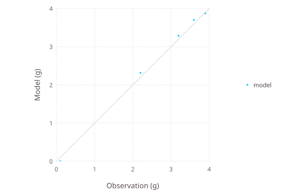
UnicodePlots
visualize(observations,
Growth,
:measured => :mass;
backend = :UnicodePlots,
index = :hour => "context.clock.time",
config = Growth => :rate => 1,
stop = 12u"hr",
name = "model",
) ┌──────────────────────────────┐
4 │⠀⠀⠀⠀⠀⠀⠀⠀⠀⠀⠀⠀⠀⠀⠀⠀⠀⠀⠀⠀⠀⠀⠀⠀⠀⠀⠀⠀⢀⠞│ model
│⠀⠀⠀⠀⠀⠀⠀⠀⠀⠀⠀⠀⠀⠀⠀⠀⠀⠀⠀⠀⠀⠀⠀⠀⠀⠀⢀⠕⠁⠀│
│⠀⠀⠀⠀⠀⠀⠀⠀⠀⠀⠀⠀⠀⠀⠀⠀⠀⠀⠀⠀⠀⠀⠀⠀⢄⠔⠁⠀⠀⠀│
│⠀⠀⠀⠀⠀⠀⠀⠀⠀⠀⠀⠀⠀⠀⠀⠀⠀⠀⠀⠀⠀⠀⢀⠔⠁⠀⠀⠀⠀⠀│
│⠀⠀⠀⠀⠀⠀⠀⠀⠀⠀⠀⠀⠀⠀⠀⠀⠀⠀⠀⠀⢀⠔⠁⠀⠀⠀⠀⠀⠀⠀│
│⠀⠀⠀⠀⠀⠀⠀⠀⠀⠀⠀⠀⠀⠀⠀⠀⠀⠀⢀⠔⠁⠀⠀⠀⠀⠀⠀⠀⠀⠀│
│⠀⠀⠀⠀⠀⠀⠀⠀⠀⠀⠀⠀⠀⠀⠀⠀⢐⠔⠁⠀⠀⠀⠀⠀⠀⠀⠀⠀⠀⠀│
Model (g) │⠀⠀⠀⠀⠀⠀⠀⠀⠀⠀⠀⠀⠀⠀⢀⠔⠁⠀⠀⠀⠀⠀⠀⠀⠀⠀⠀⠀⠀⠀│
│⠀⠀⠀⠀⠀⠀⠀⠀⠀⠀⠀⠀⢀⠔⠁⠀⠀⠀⠀⠀⠀⠀⠀⠀⠀⠀⠀⠀⠀⠀│
│⠀⠀⠀⠀⠀⠀⠀⠀⠀⠀⢀⠔⠁⠀⠀⠀⠀⠀⠀⠀⠀⠀⠀⠀⠀⠀⠀⠀⠀⠀│
│⠀⠀⠀⠀⠀⠀⠀⠀⢀⠔⠁⠀⠀⠀⠀⠀⠀⠀⠀⠀⠀⠀⠀⠀⠀⠀⠀⠀⠀⠀│
│⠀⠀⠀⠀⠀⠀⢀⠔⠁⠀⠀⠀⠀⠀⠀⠀⠀⠀⠀⠀⠀⠀⠀⠀⠀⠀⠀⠀⠀⠀│
│⠀⠀⠀⠀⢀⠔⠁⠀⠀⠀⠀⠀⠀⠀⠀⠀⠀⠀⠀⠀⠀⠀⠀⠀⠀⠀⠀⠀⠀⠀│
│⠀⠀⢀⠔⠁⠀⠀⠀⠀⠀⠀⠀⠀⠀⠀⠀⠀⠀⠀⠀⠀⠀⠀⠀⠀⠀⠀⠀⠀⠀│
0 │⣀⠔⠁⠀⠀⠀⠀⠀⠀⠀⠀⠀⠀⠀⠀⠀⠀⠀⠀⠀⠀⠀⠀⠀⠀⠀⠀⠀⠀⠀│
└──────────────────────────────┘
⠀0.0⠀⠀⠀⠀⠀⠀⠀⠀⠀⠀⠀⠀⠀⠀⠀⠀⠀⠀⠀⠀⠀⠀⠀⠀4.0⠀
⠀⠀⠀⠀⠀⠀⠀⠀⠀Observation (g)⠀⠀⠀⠀⠀⠀⠀⠀ Saved estimates
A saved simulation table can replace the system argument. No simulation is rerun, and neither input table is modified:
estimates = simulate(Growth; target = :mass, stop = 12u"hr")
visualize(observations, estimates, :measured => :mass;
index = :hour => :time,
name = "saved model",
)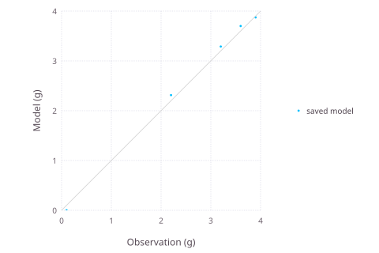
UnicodePlots
visualize(observations, estimates, :measured => :mass;
backend = :UnicodePlots,
index = :hour => :time,
name = "saved model",
) ┌──────────────────────────────┐
4 │⠀⠀⠀⠀⠀⠀⠀⠀⠀⠀⠀⠀⠀⠀⠀⠀⠀⠀⠀⠀⠀⠀⠀⠀⠀⠀⠀⠀⢀⠞│ saved model
│⠀⠀⠀⠀⠀⠀⠀⠀⠀⠀⠀⠀⠀⠀⠀⠀⠀⠀⠀⠀⠀⠀⠀⠀⠀⠀⢀⠕⠁⠀│
│⠀⠀⠀⠀⠀⠀⠀⠀⠀⠀⠀⠀⠀⠀⠀⠀⠀⠀⠀⠀⠀⠀⠀⠀⢄⠔⠁⠀⠀⠀│
│⠀⠀⠀⠀⠀⠀⠀⠀⠀⠀⠀⠀⠀⠀⠀⠀⠀⠀⠀⠀⠀⠀⢀⠔⠁⠀⠀⠀⠀⠀│
│⠀⠀⠀⠀⠀⠀⠀⠀⠀⠀⠀⠀⠀⠀⠀⠀⠀⠀⠀⠀⢀⠔⠁⠀⠀⠀⠀⠀⠀⠀│
│⠀⠀⠀⠀⠀⠀⠀⠀⠀⠀⠀⠀⠀⠀⠀⠀⠀⠀⢀⠔⠁⠀⠀⠀⠀⠀⠀⠀⠀⠀│
│⠀⠀⠀⠀⠀⠀⠀⠀⠀⠀⠀⠀⠀⠀⠀⠀⢐⠔⠁⠀⠀⠀⠀⠀⠀⠀⠀⠀⠀⠀│
Model (g) │⠀⠀⠀⠀⠀⠀⠀⠀⠀⠀⠀⠀⠀⠀⢀⠔⠁⠀⠀⠀⠀⠀⠀⠀⠀⠀⠀⠀⠀⠀│
│⠀⠀⠀⠀⠀⠀⠀⠀⠀⠀⠀⠀⢀⠔⠁⠀⠀⠀⠀⠀⠀⠀⠀⠀⠀⠀⠀⠀⠀⠀│
│⠀⠀⠀⠀⠀⠀⠀⠀⠀⠀⢀⠔⠁⠀⠀⠀⠀⠀⠀⠀⠀⠀⠀⠀⠀⠀⠀⠀⠀⠀│
│⠀⠀⠀⠀⠀⠀⠀⠀⢀⠔⠁⠀⠀⠀⠀⠀⠀⠀⠀⠀⠀⠀⠀⠀⠀⠀⠀⠀⠀⠀│
│⠀⠀⠀⠀⠀⠀⢀⠔⠁⠀⠀⠀⠀⠀⠀⠀⠀⠀⠀⠀⠀⠀⠀⠀⠀⠀⠀⠀⠀⠀│
│⠀⠀⠀⠀⢀⠔⠁⠀⠀⠀⠀⠀⠀⠀⠀⠀⠀⠀⠀⠀⠀⠀⠀⠀⠀⠀⠀⠀⠀⠀│
│⠀⠀⢀⠔⠁⠀⠀⠀⠀⠀⠀⠀⠀⠀⠀⠀⠀⠀⠀⠀⠀⠀⠀⠀⠀⠀⠀⠀⠀⠀│
0 │⣀⠔⠁⠀⠀⠀⠀⠀⠀⠀⠀⠀⠀⠀⠀⠀⠀⠀⠀⠀⠀⠀⠀⠀⠀⠀⠀⠀⠀⠀│
└──────────────────────────────┘
⠀0.0⠀⠀⠀⠀⠀⠀⠀⠀⠀⠀⠀⠀⠀⠀⠀⠀⠀⠀⠀⠀⠀⠀⠀⠀4.0⠀
⠀⠀⠀⠀⠀⠀⠀⠀⠀Observation (g)⠀⠀⠀⠀⠀⠀⠀⠀ Here pairs map observation column names to estimate column names, including the index columns. Use a single name when the names match, for example visualize(obs, est, :mass; index = :time). Both tables may contain unrelated columns with the same names. Compatible index units such as hours and minutes are converted before matching; rows are matched by index, not by their order. Multiple index columns are supported, for example index = [:site, :time]. Only matched rows are plotted, and an empty match is an error. Duplicate keys follow DataFrames' inner-join semantics: every matching pair is included.
Use visualize!(p, obs, est, y; index, options...) to append to an existing plot. A scalar target uses name; a vector of targets uses names and colors, just like the system-based comparison.
A vector target draws one observation-versus-estimate series for each target.
Grouped estimates
Saved estimates can also use group to draw one series per model without a manual join or another simulation:
using Cropbox, DataFrames
observed = DataFrame(year = 2020:2022, doy = [20., 22., 24.]u"d")
predicted = DataFrame(
year = repeat(2020:2022, 2), model = repeat(["early", "late"], inner = 3),
doy = [19., NaN, 23., 21., 23., 25.]u"d")
visualize(observed, predicted, :doy;
backend = :Makie,
index = :year, group = :model)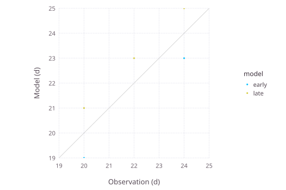
UnicodePlots
visualize(observed, predicted, :doy;
backend = :UnicodePlots,
index = :year, group = :model) ┌──────────────────────────────┐
25 │⠀⠀⠀⠀⠀⠀⠀⠀⠀⠀⠀⠀⠀⠀⠀⠀⠀⠀⠀⠀⠀⠀⠀⠀⠀⠁⠀⠀⢀⠜│ model
│⠀⠀⠀⠀⠀⠀⠀⠀⠀⠀⠀⠀⠀⠀⠀⠀⠀⠀⠀⠀⠀⠀⠀⠀⠀⠀⢀⠔⠁⠀│ early
│⠀⠀⠀⠀⠀⠀⠀⠀⠀⠀⠀⠀⠀⠀⠀⠀⠀⠀⠀⠀⠀⠀⠀⠀⢀⠔⠁⠀⠀⠀│ late
│⠀⠀⠀⠀⠀⠀⠀⠀⠀⠀⠀⠀⠀⠀⠀⠀⠀⠀⠀⠀⠀⠀⢀⠔⠁⠀⠀⠀⠀⠀│
│⠀⠀⠀⠀⠀⠀⠀⠀⠀⠀⠀⠀⠀⠀⠀⠀⠀⠀⠀⠀⢀⠔⠁⠀⠀⠀⠀⠀⠀⠀│
│⠀⠀⠀⠀⠀⠀⠀⠀⠀⠀⠀⠀⠀⠀⠀⠁⠀⠀⢀⠔⠁⠀⠀⠀⠀⠁⠀⠀⠀⠀│
│⠀⠀⠀⠀⠀⠀⠀⠀⠀⠀⠀⠀⠀⠀⠀⠀⢀⠔⠁⠀⠀⠀⠀⠀⠀⠀⠀⠀⠀⠀│
Model (d) │⠀⠀⠀⠀⠀⠀⠀⠀⠀⠀⠀⠀⠀⠀⢀⠔⠁⠀⠀⠀⠀⠀⠀⠀⠀⠀⠀⠀⠀⠀│
│⠀⠀⠀⠀⠀⠀⠀⠀⠀⠀⠀⠀⢀⠔⠁⠀⠀⠀⠀⠀⠀⠀⠀⠀⠀⠀⠀⠀⠀⠀│
│⠀⠀⠀⠀⠀⠀⠀⠀⠀⠀⢀⠔⠁⠀⠀⠀⠀⠀⠀⠀⠀⠀⠀⠀⠀⠀⠀⠀⠀⠀│
│⠀⠀⠀⠀⠀⠁⠀⠀⢀⠔⠁⠀⠀⠀⠀⠀⠀⠀⠀⠀⠀⠀⠀⠀⠀⠀⠀⠀⠀⠀│
│⠀⠀⠀⠀⠀⠀⢀⠔⠁⠀⠀⠀⠀⠀⠀⠀⠀⠀⠀⠀⠀⠀⠀⠀⠀⠀⠀⠀⠀⠀│
│⠀⠀⠀⠀⢀⠔⠁⠀⠀⠀⠀⠀⠀⠀⠀⠀⠀⠀⠀⠀⠀⠀⠀⠀⠀⠀⠀⠀⠀⠀│
│⠀⠀⢀⠔⠁⠀⠀⠀⠀⠀⠀⠀⠀⠀⠀⠀⠀⠀⠀⠀⠀⠀⠀⠀⠀⠀⠀⠀⠀⠀│
19 │⣀⠔⠁⠀⠀⡀⠀⠀⠀⠀⠀⠀⠀⠀⠀⠀⠀⠀⠀⠀⠀⠀⠀⠀⠀⠀⠀⠀⠀⠀│
└──────────────────────────────┘
⠀19.0⠀⠀⠀⠀⠀⠀⠀⠀⠀⠀⠀⠀⠀⠀⠀⠀⠀⠀⠀⠀⠀⠀25.0⠀
⠀⠀⠀⠀⠀⠀⠀⠀⠀Observation (d)⠀⠀⠀⠀⠀⠀⠀⠀ Grouping columns are taken from the estimate table; they need not exist in the observations. If a grouping column is present in both tables, Cropbox first matches its values, then joins the selected rows by index. Each estimate group must have at least one matching observation. DataFrame views are supported and neither table is changed.
Groups follow their first appearance in the estimate table. With multiple targets, each group contains the targets in the supplied order. Custom names and colors need one entry per resulting series. All groups share one axis range and one 1:1 reference line; non-finite predictions remain in the data but are not drawn as points.
Several model specifications
For several model specifications of one target, pass named tuples with system, config, or configs fields:
models = [
(; system = Growth,
config = Growth => :rate => 0.9),
(; system = Growth,
config = Growth => :rate => 1.1),
]
visualize(observations, models, :measured => :mass;
index = :hour => "context.clock.time",
names = ["slow", "fast"],
stop = 12u"hr",
)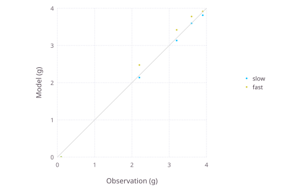
UnicodePlots
visualize(observations, models, :measured => :mass;
backend = :UnicodePlots,
index = :hour => "context.clock.time",
names = ["slow", "fast"],
stop = 12u"hr",
) ┌──────────────────────────────┐
4 │⠀⠀⠀⠀⠀⠀⠀⠀⠀⠀⠀⠀⠀⠀⠀⠀⠀⠀⠀⠀⠀⠀⠀⠀⠀⠀⠀⡀⢀⠞│ slow
│⠀⠀⠀⠀⠀⠀⠀⠀⠀⠀⠀⠀⠀⠀⠀⠀⠀⠀⠀⠀⠀⠀⠀⠀⠀⠀⢀⠔⠁⠀│ fast
│⠀⠀⠀⠀⠀⠀⠀⠀⠀⠀⠀⠀⠀⠀⠀⠀⠀⠀⠀⠀⠀⠀⠀⠀⢁⠔⠁⠀⠀⠀│
│⠀⠀⠀⠀⠀⠀⠀⠀⠀⠀⠀⠀⠀⠀⠀⠀⠀⠀⠀⠀⠀⠀⢀⠔⠃⠀⠀⠀⠀⠀│
│⠀⠀⠀⠀⠀⠀⠀⠀⠀⠀⠀⠀⠀⠀⠀⠀⠀⠀⠀⠀⢀⠔⠁⠀⠀⠀⠀⠀⠀⠀│
│⠀⠀⠀⠀⠀⠀⠀⠀⠀⠀⠀⠀⠀⠀⠀⠀⠠⠀⢀⠔⠁⠀⠀⠀⠀⠀⠀⠀⠀⠀│
│⠀⠀⠀⠀⠀⠀⠀⠀⠀⠀⠀⠀⠀⠀⠀⠀⢀⠔⠁⠀⠀⠀⠀⠀⠀⠀⠀⠀⠀⠀│
Model (g) │⠀⠀⠀⠀⠀⠀⠀⠀⠀⠀⠀⠀⠀⠀⢀⠔⠁⠀⠀⠀⠀⠀⠀⠀⠀⠀⠀⠀⠀⠀│
│⠀⠀⠀⠀⠀⠀⠀⠀⠀⠀⠀⠀⢀⠔⠁⠀⠀⠀⠀⠀⠀⠀⠀⠀⠀⠀⠀⠀⠀⠀│
│⠀⠀⠀⠀⠀⠀⠀⠀⠀⠀⢀⠔⠁⠀⠀⠀⠀⠀⠀⠀⠀⠀⠀⠀⠀⠀⠀⠀⠀⠀│
│⠀⠀⠀⠀⠀⠀⠀⠀⢀⠔⠁⠀⠀⠀⠀⠀⠀⠀⠀⠀⠀⠀⠀⠀⠀⠀⠀⠀⠀⠀│
│⠀⠀⠀⠀⠀⠀⢀⠔⠁⠀⠀⠀⠀⠀⠀⠀⠀⠀⠀⠀⠀⠀⠀⠀⠀⠀⠀⠀⠀⠀│
│⠀⠀⠀⠀⢀⠔⠁⠀⠀⠀⠀⠀⠀⠀⠀⠀⠀⠀⠀⠀⠀⠀⠀⠀⠀⠀⠀⠀⠀⠀│
│⠀⠀⢀⠔⠁⠀⠀⠀⠀⠀⠀⠀⠀⠀⠀⠀⠀⠀⠀⠀⠀⠀⠀⠀⠀⠀⠀⠀⠀⠀│
0 │⣀⠔⠁⠀⠀⠀⠀⠀⠀⠀⠀⠀⠀⠀⠀⠀⠀⠀⠀⠀⠀⠀⠀⠀⠀⠀⠀⠀⠀⠀│
└──────────────────────────────┘
⠀0.0⠀⠀⠀⠀⠀⠀⠀⠀⠀⠀⠀⠀⠀⠀⠀⠀⠀⠀⠀⠀⠀⠀⠀⠀4.0⠀
⠀⠀⠀⠀⠀⠀⠀⠀⠀Observation (g)⠀⠀⠀⠀⠀⠀⠀⠀ These plots join on the index, so missing points, incompatible units, time-zone differences, or duplicate indices can change which rows appear. Check the joined data with evaluate or an explicit DataFrames join when a point is unexpectedly absent.
Heatmaps and contours
visualize(SystemType, x, y, z;
config = (), xstep = (), ystep = (),
base = nothing, stop = nothing, snap = nothing,
options...)xstep and ystep form a factorial grid. The result is plotted as a heatmap by default. This is the pattern used for the nitrogen-by-water-potential response in the Leaf Gas Exchange tutorial.
visualize(Response, :input, :slope, :response;
xstep = Response => :input => 0:0.25:4,
ystep = Response => :slope => 0.25:0.25:2,
kind = :heatmap,
xlab = "Input",
ylab = "Slope",
zlab = "Response",
aspect = 1.4,
)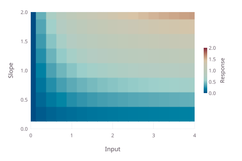
UnicodePlots
visualize(Response, :input, :slope, :response;
backend = :UnicodePlots,
xstep = Response => :input => 0:0.25:4,
ystep = Response => :slope => 0.25:0.25:2,
kind = :heatmap,
xlab = "Input",
ylab = "Slope",
zlab = "Response",
aspect = 1.4,
) ┌───────────┐ 2
2 │▄▄▄▄▄▄▄▄▄▄▄│ ┌──┐
Slope │▄▄▄▄▄▄▄▄▄▄▄│ │▄▄│
│▄▄▄▄▄▄▄▄▄▄▄│ │▄▄│ Response
0 │▄▄▄▄▄▄▄▄▄▄▄│ └──┘
└───────────┘ 0
0 4
Input Contours
The same factorial result can be rendered as contours:
visualize(Response, :input, :slope, :response;
backend = :Makie,
xstep = Response => :input => 0:0.25:4,
ystep = Response => :slope => 0.25:0.25:2,
kind = :contour,
zgap = 0.5,
zlabgap = 1,
xlab = "Input",
ylab = "Slope",
zlab = "Response",
aspect = 1.4,
)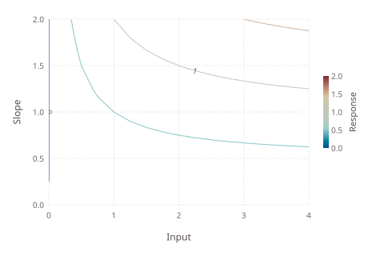
UnicodePlots
visualize(Response, :input, :slope, :response;
backend = :UnicodePlots,
xstep = Response => :input => 0:0.25:4,
ystep = Response => :slope => 0.25:0.25:2,
kind = :contour,
xlab = "Input",
ylab = "Slope",
zlab = "Response",
aspect = 1.4,
) ┌──────────────────────────────────────────┐ 2
2 │⠀⠀⢸⠀⠀⠀⠀⡇⠀⠀⠀⠀⠀⠀⠀⠈⢢⠀⠀⠀⠀⠀⠀⠀⠀⠀⠀⠀⠀⠀⠀⠀⠀⠀⠀⠀⠀⠀⠀⠀⠀⠀│ ┌──┐
│⠀⠀⢸⠀⠀⠀⠀⢱⠀⠀⠀⠀⠀⠀⠀⠀⠀⠑⢄⠀⠀⠀⠀⠀⠀⠀⠀⠀⠀⠀⠀⠀⠀⠀⠀⠀⠀⠀⠀⠀⠀⠀│ │▄▄│
│⠀⠀⠘⡄⠀⠀⠀⠀⡇⠀⠀⠀⠀⠀⠀⠀⠀⠀⠀⠑⢄⠀⠀⠀⠀⠀⠀⠀⠀⠀⠀⠀⠀⠀⠀⠀⠀⠀⠀⠀⠀⠀│ │▄▄│
│⠀⠀⠀⡇⠀⠀⠀⠀⢸⠀⠀⠀⠀⠀⠀⠀⠀⠀⠀⠀⠀⠉⢢⣀⠀⠀⠀⠀⠀⠀⠀⠀⠀⠀⠀⠀⠀⠀⠀⠀⠀⠀│ │▄▄│
│⠀⠀⠀⡇⠀⠀⠀⠀⠀⢇⠀⠀⠀⠀⠀⠀⠀⠀⠀⠀⠀⠀⠀⠀⠑⠢⣀⠀⠀⠀⠀⠀⠀⠀⠀⠀⠀⠀⠀⠀⠀⠀│ │▄▄│
│⠀⠀⠀⢣⠀⠀⠀⠀⠀⠘⣄⠀⠀⠀⠀⠀⠀⠀⠀⠀⠀⠀⠀⠀⠀⠀⠀⠉⠒⠤⣀⡀⠀⠀⠀⠀⠀⠀⠀⠀⠀⠀│ │▄▄│
│⠀⠀⠀⢸⠀⠀⠀⠀⠀⠀⠈⢆⠀⠀⠀⠀⠀⠀⠀⠀⠀⠀⠀⠀⠀⠀⠀⠀⠀⠀⠀⠈⠉⠒⠢⠤⣀⣀⠀⠀⠀⠀│ │▄▄│
│⠀⠀⠀⠸⡀⠀⠀⠀⠀⠀⠀⠈⡆⠀⠀⠀⠀⠀⠀⠀⠀⠀⠀⠀⠀⠀⠀⠀⠀⠀⠀⠀⠀⠀⠀⠀⠀⠀⠉⠑⠒⠒│ │▄▄│
│⠀⠀⠀⠀⡇⠀⠀⠀⠀⠀⠀⠀⠘⢢⠀⠀⠀⠀⠀⠀⠀⠀⠀⠀⠀⠀⠀⠀⠀⠀⠀⠀⠀⠀⠀⠀⠀⠀⠀⠀⠀⠀│ │▄▄│
│⠀⠀⠀⠀⢇⠀⠀⠀⠀⠀⠀⠀⠀⠀⠑⢄⠀⠀⠀⠀⠀⠀⠀⠀⠀⠀⠀⠀⠀⠀⠀⠀⠀⠀⠀⠀⠀⠀⠀⠀⠀⠀│ │▄▄│
│⠀⠀⠀⠀⢸⠀⠀⠀⠀⠀⠀⠀⠀⠀⠀⠀⠑⢄⠀⠀⠀⠀⠀⠀⠀⠀⠀⠀⠀⠀⠀⠀⠀⠀⠀⠀⠀⠀⠀⠀⠀⠀│ │▄▄│
│⠀⠀⠀⠀⠘⡄⠀⠀⠀⠀⠀⠀⠀⠀⠀⠀⠀⠀⠑⠢⢄⠀⠀⠀⠀⠀⠀⠀⠀⠀⠀⠀⠀⠀⠀⠀⠀⠀⠀⠀⠀⠀│ │▄▄│
│⠀⠀⠀⠀⠀⢣⠀⠀⠀⠀⠀⠀⠀⠀⠀⠀⠀⠀⠀⠀⠀⠉⠒⠤⣀⡀⠀⠀⠀⠀⠀⠀⠀⠀⠀⠀⠀⠀⠀⠀⠀⠀│ │▄▄│
│⠀⠀⠀⠀⠀⠈⡆⠀⠀⠀⠀⠀⠀⠀⠀⠀⠀⠀⠀⠀⠀⠀⠀⠀⠀⠈⠑⠒⠤⢄⣀⡀⠀⠀⠀⠀⠀⠀⠀⠀⠀⠀│ │▄▄│
Slope │⠀⠀⠀⠀⠀⠀⢱⠀⠀⠀⠀⠀⠀⠀⠀⠀⠀⠀⠀⠀⠀⠀⠀⠀⠀⠀⠀⠀⠀⠀⠀⠈⠉⠉⠒⠒⠤⠤⠤⣀⣀⣀│ │▄▄│
│⠀⠀⠀⠀⠀⠀⠀⢇⠀⠀⠀⠀⠀⠀⠀⠀⠀⠀⠀⠀⠀⠀⠀⠀⠀⠀⠀⠀⠀⠀⠀⠀⠀⠀⠀⠀⠀⠀⠀⠀⠀⠀│ │▄▄│ Response
│⠀⠀⠀⠀⠀⠀⠀⠈⢢⠀⠀⠀⠀⠀⠀⠀⠀⠀⠀⠀⠀⠀⠀⠀⠀⠀⠀⠀⠀⠀⠀⠀⠀⠀⠀⠀⠀⠀⠀⠀⠀⠀│ │▄▄│
│⠀⠀⠀⠀⠀⠀⠀⠀⠀⠱⡀⠀⠀⠀⠀⠀⠀⠀⠀⠀⠀⠀⠀⠀⠀⠀⠀⠀⠀⠀⠀⠀⠀⠀⠀⠀⠀⠀⠀⠀⠀⠀│ │▄▄│
│⠀⠀⠀⠀⠀⠀⠀⠀⠀⠀⠈⠑⣄⠀⠀⠀⠀⠀⠀⠀⠀⠀⠀⠀⠀⠀⠀⠀⠀⠀⠀⠀⠀⠀⠀⠀⠀⠀⠀⠀⠀⠀│ │▄▄│
│⠀⠀⠀⠀⠀⠀⠀⠀⠀⠀⠀⠀⠀⠑⠤⣀⠀⠀⠀⠀⠀⠀⠀⠀⠀⠀⠀⠀⠀⠀⠀⠀⠀⠀⠀⠀⠀⠀⠀⠀⠀⠀│ │▄▄│
│⠀⠀⠀⠀⠀⠀⠀⠀⠀⠀⠀⠀⠀⠀⠀⠈⠉⠒⠤⢄⣀⠀⠀⠀⠀⠀⠀⠀⠀⠀⠀⠀⠀⠀⠀⠀⠀⠀⠀⠀⠀⠀│ │▄▄│
│⠀⠀⠀⠀⠀⠀⠀⠀⠀⠀⠀⠀⠀⠀⠀⠀⠀⠀⠀⠀⠀⠉⠉⠒⠒⠢⠤⠤⣀⣀⣀⡀⠀⠀⠀⠀⠀⠀⠀⠀⠀⠀│ │▄▄│
│⠀⠀⠀⠀⠀⠀⠀⠀⠀⠀⠀⠀⠀⠀⠀⠀⠀⠀⠀⠀⠀⠀⠀⠀⠀⠀⠀⠀⠀⠀⠀⠈⠉⠉⠉⠉⠒⠒⠒⠒⠒⠒│ │▄▄│
│⠀⠀⠀⠀⠀⠀⠀⠀⠀⠀⠀⠀⠀⠀⠀⠀⠀⠀⠀⠀⠀⠀⠀⠀⠀⠀⠀⠀⠀⠀⠀⠀⠀⠀⠀⠀⠀⠀⠀⠀⠀⠀│ │▄▄│
│⠀⠀⠀⠀⠀⠀⠀⠀⠀⠀⠀⠀⠀⠀⠀⠀⠀⠀⠀⠀⠀⠀⠀⠀⠀⠀⠀⠀⠀⠀⠀⠀⠀⠀⠀⠀⠀⠀⠀⠀⠀⠀│ │▄▄│
│⠀⠀⠀⠀⠀⠀⠀⠀⠀⠀⠀⠀⠀⠀⠀⠀⠀⠀⠀⠀⠀⠀⠀⠀⠀⠀⠀⠀⠀⠀⠀⠀⠀⠀⠀⠀⠀⠀⠀⠀⠀⠀│ │▄▄│
│⠀⠀⠀⠀⠀⠀⠀⠀⠀⠀⠀⠀⠀⠀⠀⠀⠀⠀⠀⠀⠀⠀⠀⠀⠀⠀⠀⠀⠀⠀⠀⠀⠀⠀⠀⠀⠀⠀⠀⠀⠀⠀│ │▄▄│
│⠀⠀⠀⠀⠀⠀⠀⠀⠀⠀⠀⠀⠀⠀⠀⠀⠀⠀⠀⠀⠀⠀⠀⠀⠀⠀⠀⠀⠀⠀⠀⠀⠀⠀⠀⠀⠀⠀⠀⠀⠀⠀│ │▄▄│
│⠀⠀⠀⠀⠀⠀⠀⠀⠀⠀⠀⠀⠀⠀⠀⠀⠀⠀⠀⠀⠀⠀⠀⠀⠀⠀⠀⠀⠀⠀⠀⠀⠀⠀⠀⠀⠀⠀⠀⠀⠀⠀│ │▄▄│
0 │⠀⠀⠀⠀⠀⠀⠀⠀⠀⠀⠀⠀⠀⠀⠀⠀⠀⠀⠀⠀⠀⠀⠀⠀⠀⠀⠀⠀⠀⠀⠀⠀⠀⠀⠀⠀⠀⠀⠀⠀⠀⠀│ └──┘
└──────────────────────────────────────────┘ 0
⠀0⠀⠀⠀⠀⠀⠀⠀⠀⠀⠀⠀⠀⠀⠀⠀⠀⠀⠀⠀⠀⠀⠀⠀⠀⠀⠀⠀⠀⠀⠀⠀⠀⠀⠀⠀⠀⠀⠀⠀⠀4⠀
⠀⠀⠀⠀⠀⠀⠀⠀⠀⠀⠀⠀⠀⠀⠀⠀⠀⠀⠀⠀Input⠀⠀⠀⠀⠀⠀⠀⠀⠀⠀⠀⠀⠀⠀⠀⠀⠀⠀⠀ Gridded DataFrames
Three-column visualize(df, x, y, z) uses the same renderer. Set kind=:contour for contour lines. zlim fixes the color or contour range, zgap controls contour spacing, and zlabgap requests labels at a chosen interval. UnicodePlots draws contour lines using its native level selection; explicit zgap and zlabgap remain Makie-only. Grid rows may be unordered; missing cells and missing values are not interpolated. Duplicate coordinates are rejected. Terminal heatmaps need evenly spaced x and y coordinates; Makie also accepts irregular spacing.
DataFrame views work here too, so filtering a saved table does not require copying it before plotting:
grid = DataFrame(x = [1, 1, 2, 2]u"hr", y = [1, 2, 1, 2]u"m", z = [2., 3., 4., 5.]u"g")
visualize(view(grid, :, :), :x, :y, :z; zlab = "Response")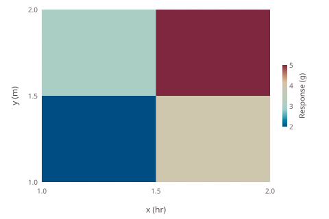
UnicodePlots
visualize(view(grid, :, :), :x, :y, :z;
backend = :UnicodePlots,
zlab = "Response") ┌──┐ 5
y (m) 2 │▄▄│ ┌──┐
└──┘ 2
1 2
x (hr) Terminal contours also accept irregularly spaced coordinates, with at least two distinct values on each axis:
using Cropbox, DataFrames
grid = DataFrame(x = repeat([0, 1, 3], inner = 3), y = repeat([0, 1, 2], 3), z = 0:8)
visualize(grid, :x, :y, :z;
backend = :UnicodePlots,
kind = :contour, zlab = "Response", legend = false) ┌────────────────────────────────────────┐
2 │⡇⠀⠀⠀⠀⠀⠀⠀⠘⡄⠀⠀⠀⠀⠀⠀⠀⠀⠀⠀⠀⠀⢣⠀⠀⠀⠀⠀⠀⠀⠀⠀⠀⠀⠀⠀⠀⠀⠀⠀│
│⢇⠀⠀⠀⠀⠀⠀⠀⠀⡇⠀⠀⠀⠀⠀⠀⠀⠀⠀⠀⠀⠀⠘⡄⠀⠀⠀⠀⠀⠀⠀⠀⠀⠀⠀⠀⠀⠀⠀⠀│
│⢸⠀⠀⠀⠀⠀⠀⠀⠀⢱⠀⠀⠀⠀⠀⠀⠀⠀⠀⠀⠀⠀⠀⢱⠀⠀⠀⠀⠀⠀⠀⠀⠀⠀⠀⠀⠀⠀⠀⠀│
│⠘⡄⠀⠀⠀⠀⠀⠀⠀⢸⠀⠀⠀⠀⠀⠀⠀⠀⠀⠀⠀⠀⠀⠈⡆⠀⠀⠀⠀⠀⠀⠀⠀⠀⠀⠀⠀⠀⠀⠀│
│⠀⡇⠀⠀⠀⠀⠀⠀⠀⠀⡇⠀⠀⠀⠀⠀⠀⠀⠀⠀⠀⠀⠀⠀⠸⡀⠀⠀⠀⠀⠀⠀⠀⠀⠀⠀⠀⠀⠀⠀│
│⠀⢱⠀⠀⠀⠀⠀⠀⠀⠀⢣⠀⠀⠀⠀⠀⠀⠀⠀⠀⠀⠀⠀⠀⠀⢇⠀⠀⠀⠀⠀⠀⠀⠀⠀⠀⠀⠀⠀⠀│
│⠀⠸⡀⠀⠀⠀⠀⠀⠀⠀⢸⠀⠀⠀⠀⠀⠀⠀⠀⠀⠀⠀⠀⠀⠀⠘⡄⠀⠀⠀⠀⠀⠀⠀⠀⠀⠀⠀⠀⠀│
│⠀⠀⡇⠀⠀⠀⠀⠀⠀⠀⠈⡆⠀⠀⠀⠀⠀⠀⠀⠀⠀⠀⠀⠀⠀⠀⢱⠀⠀⠀⠀⠀⠀⠀⠀⠀⠀⠀⠀⠀│
│⠀⠀⢣⠀⠀⠀⠀⠀⠀⠀⠀⡇⠀⠀⠀⠀⠀⠀⠀⠀⠀⠀⠀⠀⠀⠀⠈⡆⠀⠀⠀⠀⠀⠀⠀⠀⠀⠀⠀⠀│
│⠀⠀⢸⠀⠀⠀⠀⠀⠀⠀⠀⢸⠀⠀⠀⠀⠀⠀⠀⠀⠀⠀⠀⠀⠀⠀⠀⢸⠀⠀⠀⠀⠀⠀⠀⠀⠀⠀⠀⠀│
│⠀⠀⠈⡆⠀⠀⠀⠀⠀⠀⠀⠸⡀⠀⠀⠀⠀⠀⠀⠀⠀⠀⠀⠀⠀⠀⠀⠀⢇⠀⠀⠀⠀⠀⠀⠀⠀⠀⠀⠀│
│⠀⠀⠀⡇⠀⠀⠀⠀⠀⠀⠀⠀⡇⠀⠀⠀⠀⠀⠀⠀⠀⠀⠀⠀⠀⠀⠀⠀⠘⡄⠀⠀⠀⠀⠀⠀⠀⠀⠀⠀│
│⠀⠀⠀⢸⠀⠀⠀⠀⠀⠀⠀⠀⢱⠀⠀⠀⠀⠀⠀⠀⠀⠀⠀⠀⠀⠀⠀⠀⠀⢣⠀⠀⠀⠀⠀⠀⠀⠀⠀⠀│
│⠀⠀⠀⠸⡀⠀⠀⠀⠀⠀⠀⠀⢸⠀⠀⠀⠀⠀⠀⠀⠀⠀⠀⠀⠀⠀⠀⠀⠀⠈⡆⠀⠀⠀⠀⠀⠀⠀⠀⠀│
y │⠀⠀⠀⠀⡇⠀⠀⠀⠀⠀⠀⠀⠀⡇⠀⠀⠀⠀⠀⠀⠀⠀⠀⠀⠀⠀⠀⠀⠀⠀⢸⠀⠀⠀⠀⠀⠀⠀⠀⠀│
│⠀⠀⠀⠀⢱⠀⠀⠀⠀⠀⠀⠀⠀⢣⠀⠀⠀⠀⠀⠀⠀⠀⠀⠀⠀⠀⠀⠀⠀⠀⠀⢇⠀⠀⠀⠀⠀⠀⠀⠀│
│⠀⠀⠀⠀⢸⠀⠀⠀⠀⠀⠀⠀⠀⠈⡆⠀⠀⠀⠀⠀⠀⠀⠀⠀⠀⠀⠀⠀⠀⠀⠀⠘⡄⠀⠀⠀⠀⠀⠀⠀│
│⠀⠀⠀⠀⠀⡇⠀⠀⠀⠀⠀⠀⠀⠀⢸⠀⠀⠀⠀⠀⠀⠀⠀⠀⠀⠀⠀⠀⠀⠀⠀⠀⢣⠀⠀⠀⠀⠀⠀⠀│
│⠀⠀⠀⠀⠀⢇⠀⠀⠀⠀⠀⠀⠀⠀⠀⢇⠀⠀⠀⠀⠀⠀⠀⠀⠀⠀⠀⠀⠀⠀⠀⠀⠈⡆⠀⠀⠀⠀⠀⠀│
│⠀⠀⠀⠀⠀⢸⠀⠀⠀⠀⠀⠀⠀⠀⠀⠸⡀⠀⠀⠀⠀⠀⠀⠀⠀⠀⠀⠀⠀⠀⠀⠀⠀⢱⠀⠀⠀⠀⠀⠀│
│⠀⠀⠀⠀⠀⠘⡄⠀⠀⠀⠀⠀⠀⠀⠀⠀⢣⠀⠀⠀⠀⠀⠀⠀⠀⠀⠀⠀⠀⠀⠀⠀⠀⠀⢇⠀⠀⠀⠀⠀│
│⠀⠀⠀⠀⠀⠀⡇⠀⠀⠀⠀⠀⠀⠀⠀⠀⠈⡆⠀⠀⠀⠀⠀⠀⠀⠀⠀⠀⠀⠀⠀⠀⠀⠀⠸⡀⠀⠀⠀⠀│
│⠀⠀⠀⠀⠀⠀⢸⠀⠀⠀⠀⠀⠀⠀⠀⠀⠀⢱⠀⠀⠀⠀⠀⠀⠀⠀⠀⠀⠀⠀⠀⠀⠀⠀⠀⢣⠀⠀⠀⠀│
│⠀⠀⠀⠀⠀⠀⠸⡀⠀⠀⠀⠀⠀⠀⠀⠀⠀⠀⢇⠀⠀⠀⠀⠀⠀⠀⠀⠀⠀⠀⠀⠀⠀⠀⠀⠈⡆⠀⠀⠀│
│⠀⠀⠀⠀⠀⠀⠀⡇⠀⠀⠀⠀⠀⠀⠀⠀⠀⠀⠸⡀⠀⠀⠀⠀⠀⠀⠀⠀⠀⠀⠀⠀⠀⠀⠀⠀⢱⠀⠀⠀│
│⠀⠀⠀⠀⠀⠀⠀⢣⠀⠀⠀⠀⠀⠀⠀⠀⠀⠀⠀⢣⠀⠀⠀⠀⠀⠀⠀⠀⠀⠀⠀⠀⠀⠀⠀⠀⠀⡇⠀⠀│
│⠀⠀⠀⠀⠀⠀⠀⢸⠀⠀⠀⠀⠀⠀⠀⠀⠀⠀⠀⠘⡄⠀⠀⠀⠀⠀⠀⠀⠀⠀⠀⠀⠀⠀⠀⠀⠀⠸⡀⠀│
│⠀⠀⠀⠀⠀⠀⠀⠈⡆⠀⠀⠀⠀⠀⠀⠀⠀⠀⠀⠀⢱⠀⠀⠀⠀⠀⠀⠀⠀⠀⠀⠀⠀⠀⠀⠀⠀⠀⢣⠀│
│⠀⠀⠀⠀⠀⠀⠀⠀⢇⠀⠀⠀⠀⠀⠀⠀⠀⠀⠀⠀⠀⡇⠀⠀⠀⠀⠀⠀⠀⠀⠀⠀⠀⠀⠀⠀⠀⠀⠘⡄│
0 │⠀⠀⠀⠀⠀⠀⠀⠀⢸⠀⠀⠀⠀⠀⠀⠀⠀⠀⠀⠀⠀⠸⡀⠀⠀⠀⠀⠀⠀⠀⠀⠀⠀⠀⠀⠀⠀⠀⠀⢱│
└────────────────────────────────────────┘
⠀0⠀⠀⠀⠀⠀⠀⠀⠀⠀⠀⠀⠀⠀⠀⠀⠀⠀⠀⠀⠀⠀⠀⠀⠀⠀⠀⠀⠀⠀⠀⠀⠀⠀⠀⠀⠀⠀⠀3⠀
⠀⠀⠀⠀⠀⠀⠀⠀⠀⠀⠀⠀⠀⠀⠀⠀⠀⠀⠀⠀⠀x⠀⠀⠀⠀⠀⠀⠀⠀⠀⠀⠀⠀⠀⠀⠀⠀⠀⠀⠀⠀ Plot kinds and layers
Two-dimensional plots support these kind values:
kind | Use |
|---|---|
:scatter | separate observations; the default |
:line | a continuous ordered trajectory |
:scatterline | points and a connecting line |
:step | stages, counts, or Boolean state changes |
:hline | one or more horizontal reference lines |
:vline | one or more vertical reference lines |
:heatmap | a color-valued grid from three variables |
:contour | equal-value lines through the same grid |
Step plots
step automatically treats Boolean values and other repeated categories as ordered levels. Supply ycat when their display order must be explicit. For Makie step plots, appending new categories keeps the existing order and adds the new levels at the end.
Terminal layers share the initial category order. List all categories in ycat before adding layers; an undeclared category raises an error rather than being drawn under the wrong label. Grouped tables infer the shared order from all groups.
using Cropbox
p = visualize([0, 1], [:sown, :emerged];
backend = :UnicodePlots,
kind = :step, ycat = [:sown, :emerged, :mature], legend = false)
visualize!(p, [0, 1], [:emerged, :mature]; kind = :step, legend = false) ┌────────────────────────────────────────┐
mature │⠀⠀⠀⠀⠀⠀⠀⠀⠀⠀⠀⠀⠀⠀⠀⠀⠀⠀⠀⠀⠀⠀⠀⠀⠀⠀⠀⠀⠀⠀⠀⠀⠀⠀⠀⠀⠀⠀⠀⢸│
emerged │⠤⠤⠤⠤⠤⠤⠤⠤⠤⠤⠤⠤⠤⠤⠤⠤⠤⠤⠤⠤⠤⠤⠤⠤⠤⠤⠤⠤⠤⠤⠤⠤⠤⠤⠤⠤⠤⠤⠤⢼│
sown │⣀⣀⣀⣀⣀⣀⣀⣀⣀⣀⣀⣀⣀⣀⣀⣀⣀⣀⣀⣀⣀⣀⣀⣀⣀⣀⣀⣀⣀⣀⣀⣀⣀⣀⣀⣀⣀⣀⣀⣸│
└────────────────────────────────────────┘
⠀0⠀⠀⠀⠀⠀⠀⠀⠀⠀⠀⠀⠀⠀⠀⠀⠀⠀⠀⠀⠀⠀⠀⠀⠀⠀⠀⠀⠀⠀⠀⠀⠀⠀⠀⠀⠀⠀⠀1⠀ stage = DataFrame(
day = [0, 5, 10, 15, 20, 25, 30]u"d",
state = [:dormant, :dormant, :swelling, :swelling, :budburst, :budburst, :budburst])
visualize(stage, :day, :state;
kind = :step, ycat = [:dormant, :swelling, :budburst],
xlab = "Time", ylab = "Stage", legend = false)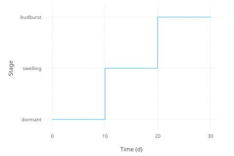
UnicodePlots
visualize(stage, :day, :state;
backend = :UnicodePlots,
kind = :step, ycat = [:dormant, :swelling, :budburst],
xlab = "Time", ylab = "Stage", legend = false) ┌────────────────────────────────────────┐
budburst │⠀⠀⠀⠀⠀⠀⠀⠀⠀⠀⠀⠀⠀⠀⠀⠀⠀⠀⠀⠀⠀⠀⠀⠀⠀⠀⢸⠉⠉⠉⠉⠉⠉⠉⠉⠉⠉⠉⠉⠉│
Stage swelling │⠀⠀⠀⠀⠀⠀⠀⠀⠀⠀⠀⠀⠀⡤⠤⠤⠤⠤⠤⠤⠤⠤⠤⠤⠤⠤⠼⠀⠀⠀⠀⠀⠀⠀⠀⠀⠀⠀⠀⠀│
dormant │⣀⣀⣀⣀⣀⣀⣀⣀⣀⣀⣀⣀⣀⡇⠀⠀⠀⠀⠀⠀⠀⠀⠀⠀⠀⠀⠀⠀⠀⠀⠀⠀⠀⠀⠀⠀⠀⠀⠀⠀│
└────────────────────────────────────────┘
⠀0⠀⠀⠀⠀⠀⠀⠀⠀⠀⠀⠀⠀⠀⠀⠀⠀⠀⠀⠀⠀⠀⠀⠀⠀⠀⠀⠀⠀⠀⠀⠀⠀⠀⠀⠀⠀⠀30⠀
⠀⠀⠀⠀⠀⠀⠀⠀⠀⠀⠀⠀⠀⠀⠀⠀⠀Time (d)⠀⠀⠀⠀⠀⠀⠀⠀⠀⠀⠀⠀⠀⠀⠀⠀⠀ Reference lines
An initial horizontal line needs xlim; an initial vertical line needs ylim. When the line is appended to a plot, Cropbox reuses that plot's limits.
visualize([1, 3]u"g";
kind = :hline, xlim = (0, 12), ylim = (0, 4),
xunit = u"hr", xlab = "Time", ylab = "Mass", legend = false)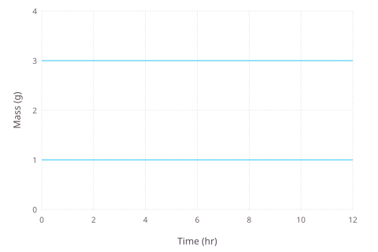
UnicodePlots
visualize([1, 3]u"g";
backend = :UnicodePlots,
kind = :hline, xlim = (0, 12), ylim = (0, 4),
xunit = u"hr", xlab = "Time", ylab = "Mass", legend = false) ┌────────────────────────────────────────┐
4 │⠀⠀⠀⠀⠀⠀⠀⠀⠀⠀⠀⠀⠀⠀⠀⠀⠀⠀⠀⠀⠀⠀⠀⠀⠀⠀⠀⠀⠀⠀⠀⠀⠀⠀⠀⠀⠀⠀⠀⠀│
│⠀⠀⠀⠀⠀⠀⠀⠀⠀⠀⠀⠀⠀⠀⠀⠀⠀⠀⠀⠀⠀⠀⠀⠀⠀⠀⠀⠀⠀⠀⠀⠀⠀⠀⠀⠀⠀⠀⠀⠀│
│⠀⠀⠀⠀⠀⠀⠀⠀⠀⠀⠀⠀⠀⠀⠀⠀⠀⠀⠀⠀⠀⠀⠀⠀⠀⠀⠀⠀⠀⠀⠀⠀⠀⠀⠀⠀⠀⠀⠀⠀│
│⣀⣀⣀⣀⣀⣀⣀⣀⣀⣀⣀⣀⣀⣀⣀⣀⣀⣀⣀⣀⣀⣀⣀⣀⣀⣀⣀⣀⣀⣀⣀⣀⣀⣀⣀⣀⣀⣀⣀⣀│
│⠀⠀⠀⠀⠀⠀⠀⠀⠀⠀⠀⠀⠀⠀⠀⠀⠀⠀⠀⠀⠀⠀⠀⠀⠀⠀⠀⠀⠀⠀⠀⠀⠀⠀⠀⠀⠀⠀⠀⠀│
│⠀⠀⠀⠀⠀⠀⠀⠀⠀⠀⠀⠀⠀⠀⠀⠀⠀⠀⠀⠀⠀⠀⠀⠀⠀⠀⠀⠀⠀⠀⠀⠀⠀⠀⠀⠀⠀⠀⠀⠀│
│⠀⠀⠀⠀⠀⠀⠀⠀⠀⠀⠀⠀⠀⠀⠀⠀⠀⠀⠀⠀⠀⠀⠀⠀⠀⠀⠀⠀⠀⠀⠀⠀⠀⠀⠀⠀⠀⠀⠀⠀│
Mass (g) │⠀⠀⠀⠀⠀⠀⠀⠀⠀⠀⠀⠀⠀⠀⠀⠀⠀⠀⠀⠀⠀⠀⠀⠀⠀⠀⠀⠀⠀⠀⠀⠀⠀⠀⠀⠀⠀⠀⠀⠀│
│⠀⠀⠀⠀⠀⠀⠀⠀⠀⠀⠀⠀⠀⠀⠀⠀⠀⠀⠀⠀⠀⠀⠀⠀⠀⠀⠀⠀⠀⠀⠀⠀⠀⠀⠀⠀⠀⠀⠀⠀│
│⠀⠀⠀⠀⠀⠀⠀⠀⠀⠀⠀⠀⠀⠀⠀⠀⠀⠀⠀⠀⠀⠀⠀⠀⠀⠀⠀⠀⠀⠀⠀⠀⠀⠀⠀⠀⠀⠀⠀⠀│
│⠀⠀⠀⠀⠀⠀⠀⠀⠀⠀⠀⠀⠀⠀⠀⠀⠀⠀⠀⠀⠀⠀⠀⠀⠀⠀⠀⠀⠀⠀⠀⠀⠀⠀⠀⠀⠀⠀⠀⠀│
│⠒⠒⠒⠒⠒⠒⠒⠒⠒⠒⠒⠒⠒⠒⠒⠒⠒⠒⠒⠒⠒⠒⠒⠒⠒⠒⠒⠒⠒⠒⠒⠒⠒⠒⠒⠒⠒⠒⠒⠒│
│⠀⠀⠀⠀⠀⠀⠀⠀⠀⠀⠀⠀⠀⠀⠀⠀⠀⠀⠀⠀⠀⠀⠀⠀⠀⠀⠀⠀⠀⠀⠀⠀⠀⠀⠀⠀⠀⠀⠀⠀│
│⠀⠀⠀⠀⠀⠀⠀⠀⠀⠀⠀⠀⠀⠀⠀⠀⠀⠀⠀⠀⠀⠀⠀⠀⠀⠀⠀⠀⠀⠀⠀⠀⠀⠀⠀⠀⠀⠀⠀⠀│
0 │⠀⠀⠀⠀⠀⠀⠀⠀⠀⠀⠀⠀⠀⠀⠀⠀⠀⠀⠀⠀⠀⠀⠀⠀⠀⠀⠀⠀⠀⠀⠀⠀⠀⠀⠀⠀⠀⠀⠀⠀│
└────────────────────────────────────────┘
⠀0⠀⠀⠀⠀⠀⠀⠀⠀⠀⠀⠀⠀⠀⠀⠀⠀⠀⠀⠀⠀⠀⠀⠀⠀⠀⠀⠀⠀⠀⠀⠀⠀⠀⠀⠀⠀⠀12⠀
⠀⠀⠀⠀⠀⠀⠀⠀⠀⠀⠀⠀⠀⠀⠀⠀⠀Time (hr)⠀⠀⠀⠀⠀⠀⠀⠀⠀⠀⠀⠀⠀⠀⠀⠀ visualize([3, 6, 9]u"hr";
kind = :vline, xlim = (0, 12), ylim = (0, 4),
yunit = u"g", xlab = "Time", ylab = "Mass", legend = false)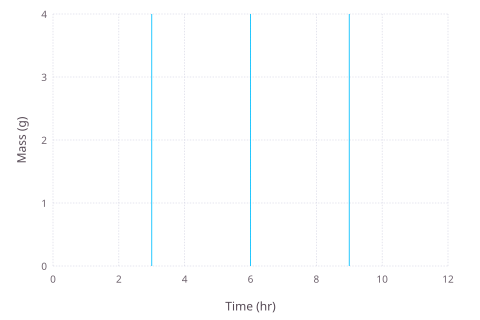
UnicodePlots
visualize([3, 6, 9]u"hr";
backend = :UnicodePlots,
kind = :vline, xlim = (0, 12), ylim = (0, 4),
yunit = u"g", xlab = "Time", ylab = "Mass", legend = false) ┌────────────────────────────────────────┐
4 │⠀⠀⠀⠀⠀⠀⠀⠀⠀⠀⡇⠀⠀⠀⠀⠀⠀⠀⠀⠀⡇⠀⠀⠀⠀⠀⠀⠀⠀⠀⡇⠀⠀⠀⠀⠀⠀⠀⠀⠀│
│⠀⠀⠀⠀⠀⠀⠀⠀⠀⠀⡇⠀⠀⠀⠀⠀⠀⠀⠀⠀⡇⠀⠀⠀⠀⠀⠀⠀⠀⠀⡇⠀⠀⠀⠀⠀⠀⠀⠀⠀│
│⠀⠀⠀⠀⠀⠀⠀⠀⠀⠀⡇⠀⠀⠀⠀⠀⠀⠀⠀⠀⡇⠀⠀⠀⠀⠀⠀⠀⠀⠀⡇⠀⠀⠀⠀⠀⠀⠀⠀⠀│
│⠀⠀⠀⠀⠀⠀⠀⠀⠀⠀⡇⠀⠀⠀⠀⠀⠀⠀⠀⠀⡇⠀⠀⠀⠀⠀⠀⠀⠀⠀⡇⠀⠀⠀⠀⠀⠀⠀⠀⠀│
│⠀⠀⠀⠀⠀⠀⠀⠀⠀⠀⡇⠀⠀⠀⠀⠀⠀⠀⠀⠀⡇⠀⠀⠀⠀⠀⠀⠀⠀⠀⡇⠀⠀⠀⠀⠀⠀⠀⠀⠀│
│⠀⠀⠀⠀⠀⠀⠀⠀⠀⠀⡇⠀⠀⠀⠀⠀⠀⠀⠀⠀⡇⠀⠀⠀⠀⠀⠀⠀⠀⠀⡇⠀⠀⠀⠀⠀⠀⠀⠀⠀│
│⠀⠀⠀⠀⠀⠀⠀⠀⠀⠀⡇⠀⠀⠀⠀⠀⠀⠀⠀⠀⡇⠀⠀⠀⠀⠀⠀⠀⠀⠀⡇⠀⠀⠀⠀⠀⠀⠀⠀⠀│
Mass (g) │⠀⠀⠀⠀⠀⠀⠀⠀⠀⠀⡇⠀⠀⠀⠀⠀⠀⠀⠀⠀⡇⠀⠀⠀⠀⠀⠀⠀⠀⠀⡇⠀⠀⠀⠀⠀⠀⠀⠀⠀│
│⠀⠀⠀⠀⠀⠀⠀⠀⠀⠀⡇⠀⠀⠀⠀⠀⠀⠀⠀⠀⡇⠀⠀⠀⠀⠀⠀⠀⠀⠀⡇⠀⠀⠀⠀⠀⠀⠀⠀⠀│
│⠀⠀⠀⠀⠀⠀⠀⠀⠀⠀⡇⠀⠀⠀⠀⠀⠀⠀⠀⠀⡇⠀⠀⠀⠀⠀⠀⠀⠀⠀⡇⠀⠀⠀⠀⠀⠀⠀⠀⠀│
│⠀⠀⠀⠀⠀⠀⠀⠀⠀⠀⡇⠀⠀⠀⠀⠀⠀⠀⠀⠀⡇⠀⠀⠀⠀⠀⠀⠀⠀⠀⡇⠀⠀⠀⠀⠀⠀⠀⠀⠀│
│⠀⠀⠀⠀⠀⠀⠀⠀⠀⠀⡇⠀⠀⠀⠀⠀⠀⠀⠀⠀⡇⠀⠀⠀⠀⠀⠀⠀⠀⠀⡇⠀⠀⠀⠀⠀⠀⠀⠀⠀│
│⠀⠀⠀⠀⠀⠀⠀⠀⠀⠀⡇⠀⠀⠀⠀⠀⠀⠀⠀⠀⡇⠀⠀⠀⠀⠀⠀⠀⠀⠀⡇⠀⠀⠀⠀⠀⠀⠀⠀⠀│
│⠀⠀⠀⠀⠀⠀⠀⠀⠀⠀⡇⠀⠀⠀⠀⠀⠀⠀⠀⠀⡇⠀⠀⠀⠀⠀⠀⠀⠀⠀⡇⠀⠀⠀⠀⠀⠀⠀⠀⠀│
0 │⠀⠀⠀⠀⠀⠀⠀⠀⠀⠀⡇⠀⠀⠀⠀⠀⠀⠀⠀⠀⡇⠀⠀⠀⠀⠀⠀⠀⠀⠀⡇⠀⠀⠀⠀⠀⠀⠀⠀⠀│
└────────────────────────────────────────┘
⠀0⠀⠀⠀⠀⠀⠀⠀⠀⠀⠀⠀⠀⠀⠀⠀⠀⠀⠀⠀⠀⠀⠀⠀⠀⠀⠀⠀⠀⠀⠀⠀⠀⠀⠀⠀⠀⠀12⠀
⠀⠀⠀⠀⠀⠀⠀⠀⠀⠀⠀⠀⠀⠀⠀⠀⠀Time (hr)⠀⠀⠀⠀⠀⠀⠀⠀⠀⠀⠀⠀⠀⠀⠀⠀ Append data and annotations
p = visualize(series, :hour, :observed;
kind = :scatter,
name = "observation",
xlab = "Time",
ylab = "Mass",
)
visualize!(p, series, :hour, :smooth;
kind = :line,
name = "reference",
)
visualize!(p, 3000u"mg";
kind = :hline,
name = "threshold",
color = :lightgray,
)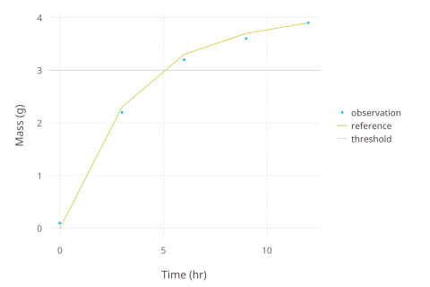
UnicodePlots
q = visualize(series, :hour, :observed;
backend = :UnicodePlots,
xlim = (0, 12), ylim = (0, 4),
kind = :scatter,
name = "observation",
xlab = "Time",
ylab = "Mass",
)
visualize!(q, series, :hour, :smooth;
kind = :line,
name = "reference",
)
visualize!(q, 3000u"mg";
kind = :hline,
name = "threshold",
color = :dark_gray,
) ┌────────────────────────────────────────┐
4 │⠀⠀⠀⠀⠀⠀⠀⠀⠀⠀⠀⠀⠀⠀⠀⠀⠀⠀⠀⠀⠀⠀⠀⠀⠀⠀⠀⠀⠀⠀⠀⠀⣀⣀⣀⠤⠤⠤⠔⠒│ observation
│⠀⠀⠀⠀⠀⠀⠀⠀⠀⠀⠀⠀⠀⠀⠀⠀⠀⠀⠀⠀⠀⠀⠀⠀⢀⣀⠤⠔⠒⠊⠋⠉⠀⠀⠀⠀⠀⠀⠀⠀│ reference
│⠀⠀⠀⠀⠀⠀⠀⠀⠀⠀⠀⠀⠀⠀⠀⠀⠀⠀⠀⢀⡤⠒⠒⠉⠁⠀⠀⠀⠀⠀⠀⠀⠀⠀⠀⠀⠀⠀⠀⠀│ threshold
│⣀⣀⣀⣀⣀⣀⣀⣀⣀⣀⣀⣀⣀⣀⣀⣀⣀⣠⣊⣁⣀⣀⣀⣀⣀⣀⣀⣀⣀⣀⣀⣀⣀⣀⣀⣀⣀⣀⣀⣀│
│⠀⠀⠀⠀⠀⠀⠀⠀⠀⠀⠀⠀⠀⠀⡠⠔⠁⠀⠀⠀⠀⠀⠀⠀⠀⠀⠀⠀⠀⠀⠀⠀⠀⠀⠀⠀⠀⠀⠀⠀│
│⠀⠀⠀⠀⠀⠀⠀⠀⠀⠀⠀⢀⠔⠊⠀⠀⠀⠀⠀⠀⠀⠀⠀⠀⠀⠀⠀⠀⠀⠀⠀⠀⠀⠀⠀⠀⠀⠀⠀⠀│
│⠀⠀⠀⠀⠀⠀⠀⠀⠀⢠⠎⠁⠀⠀⠀⠀⠀⠀⠀⠀⠀⠀⠀⠀⠀⠀⠀⠀⠀⠀⠀⠀⠀⠀⠀⠀⠀⠀⠀⠀│
Mass (g) │⠀⠀⠀⠀⠀⠀⠀⠀⡰⠁⠀⠀⠀⠀⠀⠀⠀⠀⠀⠀⠀⠀⠀⠀⠀⠀⠀⠀⠀⠀⠀⠀⠀⠀⠀⠀⠀⠀⠀⠀│
│⠀⠀⠀⠀⠀⠀⠀⡰⠁⠀⠀⠀⠀⠀⠀⠀⠀⠀⠀⠀⠀⠀⠀⠀⠀⠀⠀⠀⠀⠀⠀⠀⠀⠀⠀⠀⠀⠀⠀⠀│
│⠀⠀⠀⠀⠀⠀⡜⠀⠀⠀⠀⠀⠀⠀⠀⠀⠀⠀⠀⠀⠀⠀⠀⠀⠀⠀⠀⠀⠀⠀⠀⠀⠀⠀⠀⠀⠀⠀⠀⠀│
│⠀⠀⠀⠀⢀⠜⠀⠀⠀⠀⠀⠀⠀⠀⠀⠀⠀⠀⠀⠀⠀⠀⠀⠀⠀⠀⠀⠀⠀⠀⠀⠀⠀⠀⠀⠀⠀⠀⠀⠀│
│⠀⠀⠀⢀⠎⠀⠀⠀⠀⠀⠀⠀⠀⠀⠀⠀⠀⠀⠀⠀⠀⠀⠀⠀⠀⠀⠀⠀⠀⠀⠀⠀⠀⠀⠀⠀⠀⠀⠀⠀│
│⠀⠀⢠⠃⠀⠀⠀⠀⠀⠀⠀⠀⠀⠀⠀⠀⠀⠀⠀⠀⠀⠀⠀⠀⠀⠀⠀⠀⠀⠀⠀⠀⠀⠀⠀⠀⠀⠀⠀⠀│
│⠀⡠⠃⠀⠀⠀⠀⠀⠀⠀⠀⠀⠀⠀⠀⠀⠀⠀⠀⠀⠀⠀⠀⠀⠀⠀⠀⠀⠀⠀⠀⠀⠀⠀⠀⠀⠀⠀⠀⠀│
0 │⡴⠁⠀⠀⠀⠀⠀⠀⠀⠀⠀⠀⠀⠀⠀⠀⠀⠀⠀⠀⠀⠀⠀⠀⠀⠀⠀⠀⠀⠀⠀⠀⠀⠀⠀⠀⠀⠀⠀⠀│
└────────────────────────────────────────┘
⠀0⠀⠀⠀⠀⠀⠀⠀⠀⠀⠀⠀⠀⠀⠀⠀⠀⠀⠀⠀⠀⠀⠀⠀⠀⠀⠀⠀⠀⠀⠀⠀⠀⠀⠀⠀⠀⠀12⠀
⠀⠀⠀⠀⠀⠀⠀⠀⠀⠀⠀⠀⠀⠀⠀⠀⠀Time (hr)⠀⠀⠀⠀⠀⠀⠀⠀⠀⠀⠀⠀⠀⠀⠀⠀ The one-value :hline and :vline helpers use the y-axis and x-axis units, respectively. The 3000u"mg" reference is converted to 3u"g" above, even though the x-axis uses hours.
visualize! changes and returns the same Cropbox Plot. Reference lines and text annotations can be added through this API without modifying the backend object:
visualize!(p, [3, 9]u"hr", [4, 2]u"g"; kind = :line, color = :gray, linestyle = :dot, name = "")
visualize!(p, 6u"hr", 3.5u"g", "Reference\nline"; align = :center)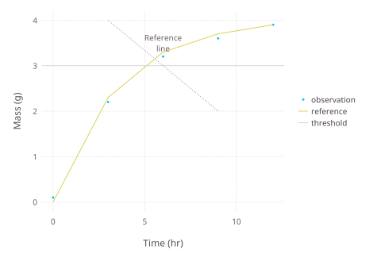
UnicodePlots
visualize!(q, [3, 9]u"hr", [4, 2]u"g"; kind = :line, color = :dark_gray, name = "")
visualize!(q, 6u"hr", 3.5u"g", "Reference\nline"; align = :center) ┌────────────────────────────────────────┐
4 │⠀⠀⠀⠀⠀⠀⠀⠀⠀⠀⠉⠢⣀⠀⠀⠀⠀⠀⠀⠀⠀⠀⠀⠀⠀⠀⠀⠀⠀⠀⠀⠀⣀⣀⣀⠤⠤⠤⠔⠒│ observation
│⠀⠀⠀⠀⠀⠀⠀⠀⠀⠀⠀⠀⠀⠑⠤⡀Reference⣀⠤⠔⠒⠊⠋⠉⠀⠀⠀⠀⠀⠀⠀⠀│ reference
│⠀⠀⠀⠀⠀⠀⠀⠀⠀⠀⠀⠀⠀⠀⠀⠈⠒⢄line⠒⠉⠁⠀⠀⠀⠀⠀⠀⠀⠀⠀⠀⠀⠀⠀⠀⠀│ threshold
│⣀⣀⣀⣀⣀⣀⣀⣀⣀⣀⣀⣀⣀⣀⣀⣀⣀⣠⣋⣣⣀⣀⣀⣀⣀⣀⣀⣀⣀⣀⣀⣀⣀⣀⣀⣀⣀⣀⣀⣀│
│⠀⠀⠀⠀⠀⠀⠀⠀⠀⠀⠀⠀⠀⠀⡠⠔⠁⠀⠀⠀⠀⠑⠤⡀⠀⠀⠀⠀⠀⠀⠀⠀⠀⠀⠀⠀⠀⠀⠀⠀│
│⠀⠀⠀⠀⠀⠀⠀⠀⠀⠀⠀⢀⠔⠊⠀⠀⠀⠀⠀⠀⠀⠀⠀⠈⠒⢄⠀⠀⠀⠀⠀⠀⠀⠀⠀⠀⠀⠀⠀⠀│
│⠀⠀⠀⠀⠀⠀⠀⠀⠀⢠⠎⠁⠀⠀⠀⠀⠀⠀⠀⠀⠀⠀⠀⠀⠀⠀⠉⠢⣀⠀⠀⠀⠀⠀⠀⠀⠀⠀⠀⠀│
Mass (g) │⠀⠀⠀⠀⠀⠀⠀⠀⡰⠁⠀⠀⠀⠀⠀⠀⠀⠀⠀⠀⠀⠀⠀⠀⠀⠀⠀⠀⠀⠑⠄⠀⠀⠀⠀⠀⠀⠀⠀⠀│
│⠀⠀⠀⠀⠀⠀⠀⡰⠁⠀⠀⠀⠀⠀⠀⠀⠀⠀⠀⠀⠀⠀⠀⠀⠀⠀⠀⠀⠀⠀⠀⠀⠀⠀⠀⠀⠀⠀⠀⠀│
│⠀⠀⠀⠀⠀⠀⡜⠀⠀⠀⠀⠀⠀⠀⠀⠀⠀⠀⠀⠀⠀⠀⠀⠀⠀⠀⠀⠀⠀⠀⠀⠀⠀⠀⠀⠀⠀⠀⠀⠀│
│⠀⠀⠀⠀⢀⠜⠀⠀⠀⠀⠀⠀⠀⠀⠀⠀⠀⠀⠀⠀⠀⠀⠀⠀⠀⠀⠀⠀⠀⠀⠀⠀⠀⠀⠀⠀⠀⠀⠀⠀│
│⠀⠀⠀⢀⠎⠀⠀⠀⠀⠀⠀⠀⠀⠀⠀⠀⠀⠀⠀⠀⠀⠀⠀⠀⠀⠀⠀⠀⠀⠀⠀⠀⠀⠀⠀⠀⠀⠀⠀⠀│
│⠀⠀⢠⠃⠀⠀⠀⠀⠀⠀⠀⠀⠀⠀⠀⠀⠀⠀⠀⠀⠀⠀⠀⠀⠀⠀⠀⠀⠀⠀⠀⠀⠀⠀⠀⠀⠀⠀⠀⠀│
│⠀⡠⠃⠀⠀⠀⠀⠀⠀⠀⠀⠀⠀⠀⠀⠀⠀⠀⠀⠀⠀⠀⠀⠀⠀⠀⠀⠀⠀⠀⠀⠀⠀⠀⠀⠀⠀⠀⠀⠀│
0 │⡴⠁⠀⠀⠀⠀⠀⠀⠀⠀⠀⠀⠀⠀⠀⠀⠀⠀⠀⠀⠀⠀⠀⠀⠀⠀⠀⠀⠀⠀⠀⠀⠀⠀⠀⠀⠀⠀⠀⠀│
└────────────────────────────────────────┘
⠀0⠀⠀⠀⠀⠀⠀⠀⠀⠀⠀⠀⠀⠀⠀⠀⠀⠀⠀⠀⠀⠀⠀⠀⠀⠀⠀⠀⠀⠀⠀⠀⠀⠀⠀⠀⠀⠀12⠀
⠀⠀⠀⠀⠀⠀⠀⠀⠀⠀⠀⠀⠀⠀⠀⠀⠀Time (hr)⠀⠀⠀⠀⠀⠀⠀⠀⠀⠀⠀⠀⠀⠀⠀⠀ With Makie, automatic axis limits expand to include appended series. Explicit xlim or ylim stays fixed, and a new explicit limit in visualize! replaces the previous setting. Automatic margins follow Makie; reference lines and text retain the existing limits. UnicodePlots uses a fixed canvas: grouped plots determine their complete range before drawing, but when manually appending to a terminal plot, supply the full range when creating it.
linestyle accepts :solid (the default), :dash, :dot, :dashdot, and :dashdotdot, or a vector with one style per y series. UnicodePlots draws solid lines and warns when another style is requested. Text uses data coordinates and the existing axis units, converting compatible unitful values. It does not change the axis limits or add a legend entry. align accepts :left (the default), :center, and :right.
On a calendar axis, pass a Date or DateTime directly as the horizontal annotation coordinate. This works with both backends:
using Cropbox, Dates
dates = collect(Date(2026, 1, 1):Day(1):Date(2026, 1, 3))
p = visualize(dates, [1, 3, 2];
backend = :Makie,
kind = :line, legend = false)
visualize!(p, Date(2026, 1, 2), 2, "Measurement")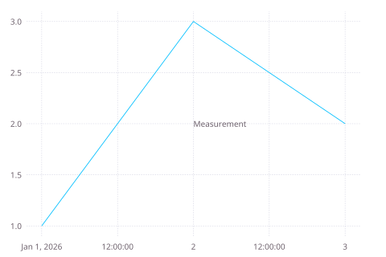
UnicodePlots
q = visualize(dates, [1, 3, 2];
backend = :UnicodePlots,
kind = :line, legend = false)
visualize!(q, Date(2026, 1, 2), 2, "Measurement") ┌────────────────────────────────────────┐
3 │⠀⠀⠀⠀⠀⠀⠀⠀⠀⠀⠀⠀⠀⠀⠀⠀⠀⠀⠀⡜⠉⠢⣀⠀⠀⠀⠀⠀⠀⠀⠀⠀⠀⠀⠀⠀⠀⠀⠀⠀│
│⠀⠀⠀⠀⠀⠀⠀⠀⠀⠀⠀⠀⠀⠀⠀⠀⠀⢀⠎⠀⠀⠀⠀⠑⠤⡀⠀⠀⠀⠀⠀⠀⠀⠀⠀⠀⠀⠀⠀⠀│
│⠀⠀⠀⠀⠀⠀⠀⠀⠀⠀⠀⠀⠀⠀⠀⠀⡠⠃⠀⠀⠀⠀⠀⠀⠀⠈⠒⢄⠀⠀⠀⠀⠀⠀⠀⠀⠀⠀⠀⠀│
│⠀⠀⠀⠀⠀⠀⠀⠀⠀⠀⠀⠀⠀⠀⠀⡔⠁⠀⠀⠀⠀⠀⠀⠀⠀⠀⠀⠀⠉⠢⣀⠀⠀⠀⠀⠀⠀⠀⠀⠀│
│⠀⠀⠀⠀⠀⠀⠀⠀⠀⠀⠀⠀⠀⢀⠎⠀⠀⠀⠀⠀⠀⠀⠀⠀⠀⠀⠀⠀⠀⠀⠀⠑⠤⡀⠀⠀⠀⠀⠀⠀│
│⠀⠀⠀⠀⠀⠀⠀⠀⠀⠀⠀⠀⡠⠃⠀⠀⠀⠀⠀⠀⠀⠀⠀⠀⠀⠀⠀⠀⠀⠀⠀⠀⠀⠈⠒⢄⠀⠀⠀⠀│
│⠀⠀⠀⠀⠀⠀⠀⠀⠀⠀⠀⡔⠁⠀⠀⠀⠀⠀⠀⠀⠀⠀⠀⠀⠀⠀⠀⠀⠀⠀⠀⠀⠀⠀⠀⠀⠉⠢⣀⠀│
│⠀⠀⠀⠀⠀⠀⠀⠀⠀⢀⠎⠀⠀⠀⠀⠀⠀⠀⠀⠀Measurement⠀⠀⠀⠀⠀⠀⠀⠀⠱│
│⠀⠀⠀⠀⠀⠀⠀⠀⡰⠁⠀⠀⠀⠀⠀⠀⠀⠀⠀⠀⠀⠀⠀⠀⠀⠀⠀⠀⠀⠀⠀⠀⠀⠀⠀⠀⠀⠀⠀⠀│
│⠀⠀⠀⠀⠀⠀⢀⠜⠀⠀⠀⠀⠀⠀⠀⠀⠀⠀⠀⠀⠀⠀⠀⠀⠀⠀⠀⠀⠀⠀⠀⠀⠀⠀⠀⠀⠀⠀⠀⠀│
│⠀⠀⠀⠀⠀⢠⠊⠀⠀⠀⠀⠀⠀⠀⠀⠀⠀⠀⠀⠀⠀⠀⠀⠀⠀⠀⠀⠀⠀⠀⠀⠀⠀⠀⠀⠀⠀⠀⠀⠀│
│⠀⠀⠀⠀⡰⠁⠀⠀⠀⠀⠀⠀⠀⠀⠀⠀⠀⠀⠀⠀⠀⠀⠀⠀⠀⠀⠀⠀⠀⠀⠀⠀⠀⠀⠀⠀⠀⠀⠀⠀│
│⠀⠀⠀⡔⠁⠀⠀⠀⠀⠀⠀⠀⠀⠀⠀⠀⠀⠀⠀⠀⠀⠀⠀⠀⠀⠀⠀⠀⠀⠀⠀⠀⠀⠀⠀⠀⠀⠀⠀⠀│
│⠀⢠⠊⠀⠀⠀⠀⠀⠀⠀⠀⠀⠀⠀⠀⠀⠀⠀⠀⠀⠀⠀⠀⠀⠀⠀⠀⠀⠀⠀⠀⠀⠀⠀⠀⠀⠀⠀⠀⠀│
1 │⡠⠃⠀⠀⠀⠀⠀⠀⠀⠀⠀⠀⠀⠀⠀⠀⠀⠀⠀⠀⠀⠀⠀⠀⠀⠀⠀⠀⠀⠀⠀⠀⠀⠀⠀⠀⠀⠀⠀⠀│
└────────────────────────────────────────┘
⠀2026-01-01⠀⠀⠀⠀⠀⠀⠀⠀⠀⠀⠀⠀⠀⠀⠀⠀⠀⠀⠀⠀2026-01-03⠀ Labels, units, limits, and backends
The main two-dimensional options are:
| Option | Meaning |
|---|---|
kind | :scatter, :line, :scatterline, or :step |
title, xlab, ylab | plot and axis labels |
name, names | one series label or several series labels |
legend, legendpos | legend title/visibility and inside position |
color, colors | one color or parallel series colors |
linestyle | line pattern, defaulting to :solid |
xlim, ylim | displayed data limits |
xunit, yunit | units used for conversion and axis labels |
ycat | explicit category order for a step plot |
aspect | requested width-to-height relation |
backend | :Makie or :UnicodePlots |
For three-column plots, zlab, zlim, zgap, and zlabgap control the color or contour dimension. legendpos = (x, y) places a Makie legend at relative coordinates: x locates its left edge from the panel's left edge, and y offsets its centre downward from the panel's centre. For example, (0.1, -0.3) places it near the upper left. The terminal backend warns and ignores that option. Makie also accepts named positions such as :lt and :rb for a series legend.
Set legend=false to hide the legend. Units are inferred from arrays or DataFrame columns. An explicit xunit or yunit converts compatible values before plotting; it does not reinterpret an incompatible number. ZonedDateTime columns are converted to DateTime because the graphical backend does not accept zoned values directly.
Cropbox chooses Makie in Jupyter, Pluto, VS Code, and Documenter, and UnicodePlots in a plain terminal. Set backend when output must be identical across environments. Use visualize and visualize! for drawing and annotations so that notebook code does not depend on a backend's internal plot structure.
Backend behavior is not completely identical:
| Feature | Makie | UnicodePlots |
|---|---|---|
| line, scatter, and step | supported | supported |
:scatterline | points plus line | points plus line |
| text annotations | supported | supported within terminal resolution |
non-solid linestyle | supported | solid lines with a warning |
| color names | Makie color names, e.g. :steelblue | terminal color names, e.g. :blue |
| heatmap | supported | supported on a regular grid |
| contour | supported | native contour lines |
inside legendpos | supported | ignored with a warning |
zgap, zlabgap | supported for contours | ignored with a warning |
Use backend = :Makie for graphical output, contour labels, and inside legends. Use :UnicodePlots for fast terminal diagnostics.
The paired examples use each backend's default palette or its supported color names. Makie names such as :steelblue and :lightgray are not terminal color names; the terminal examples use :blue and :dark_gray instead. Prefer the default palette when sharing a plotting call between backends.
Makie backend
Cropbox installs and loads Makie and its CairoMakie renderer as regular dependencies. No separate installation or using CairoMakie is needed to display a Makie plot in a notebook. Makie is the default in graphical environments; select backend = :Makie explicitly when running in a terminal.
using Cropbox
p = visualize([0, 1, 2], [0, 1, 4];
backend = :Makie,
kind = :line, name = "Model", title = "모형과 관측", legendpos = (0.1, -0.3))
visualize!(p, [0, 1, 2], [0, 1.1, 3.8]; name = "Observed")
visualize!(p, 1, 3, "Example")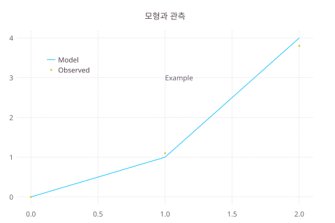
The PDF export contains the same plotted result.
The built-in Classic style follows Cropbox's Gadfly colors, lighter text, compact legends, and calendar labels. It uses Makie's bundled Noto Sans, with tick-label size 10 and axis-label/title size 12. Cropbox bundles Noto Sans CJK KR Regular as a fallback for Korean, Chinese, and Japanese, so these labels do not depend on system fonts or an extra download. The style is scoped to the figure and does not change the global Makie theme. Cropbox does not expose theme selection; use Makie directly for custom styling.
The CJK font is © 2014-2021 Adobe, licensed under the SIL Open Font License 1.1. Its original copyright and license metadata is preserved in the unmodified font file.
This adapter supports lines, scatter, scatterlines, categorical steps, horizontal/vertical lines, heatmaps, contours (including labels), and text. It retains units and explicit limits; in particular zlim is the exact color range, not Gadfly's sometimes expanded tick range. Grid rows may be unordered; missing grid cells remain blank. Dates use Makie's native calendar conversion.
Migrating from Gadfly
Normal visualize and visualize! calls keep their signatures and options, but the output is not pixel-identical. Font fallback, tick labels, legend layout, and heatmap color ranges may differ.
Cropbox no longer installs Gadfly or supports it as a backend. Replace explicit backend = :Gadfly with backend = :Makie. Code that accesses Gadfly.Plot fields or uses Cropbox.Gadfly.SVG or PDF must also change: use public visualize! calls for annotations and layers, and the export examples above for saving figures. For example, replace p[] |> Cropbox.Gadfly.PDF("figure.pdf") with Cropbox.writeimage("figure.pdf", p).
Archived workshop and course notebooks may continue to use their original versioned environments or Docker image digests. Updating those materials is separate from this package migration. manipulate now uses Bonito instead of Interact/WebIO; its return value is a Bonito-backed display object, not an Interact widget.
Display and save formats
Graphical output defaults to SVG in notebooks, documentation, and manipulate. Lines and text stay sharp when the page is zoomed. The Classic style and the 480 × 320 display size are unchanged; narrow pages shrink the figure to fit.
To save a graphical result, use Cropbox.writeimage. Display and export formats are independent:
p = visualize(series, :hour, :observed; backend = :Makie, kind = :line)
Cropbox.writeimage("observed.png", p)
Cropbox.writeimage("observed.svg", p)
Cropbox.writeimage("observed.pdf", p)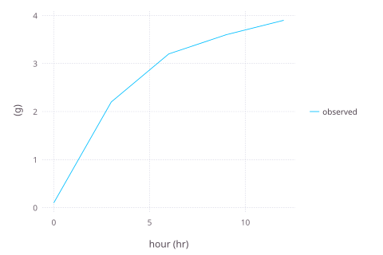
Download these exact exports as PNG, SVG, or PDF.


The function returns the output filename and needs no additional package installation or import. The filename extension selects PNG, SVG, or PDF; Cropbox.writeimage("observed", p; format = :pdf) appends the extension. Additional options are passed to CairoMakie's save. For a higher-resolution PNG, use Cropbox.writeimage("observed.png", p; px_per_unit = 3). The default px_per_unit = 2 gives a 960 × 640 PNG for a 480 × 320 figure; this changes pixel resolution, not the font sizes or layout. Image export requires backend = :Makie; UnicodePlots terminal output is not converted automatically.
For subsequent graphical output, including manipulate, select PNG before running the plotting cell:
Cropbox.CairoMakie.activate!(type = "png")
visualize(series, :hour, :observed; backend = :Makie, kind = :line)Switch back with Cropbox.CairoMakie.activate!(type = "svg"). These settings apply to CairoMakie output in the current Julia session, not already displayed figures, and need no additional package installation or import. PNG can be useful for dense figures whose SVG output is slow to display.
For direct Makie use, p[] (or p') still extracts the underlying Figure.
Common failures
- A vector of systems requires parallel
configs,names, andcolorsin the same order. In particular,configsmust have the same length as the system vector. - Grid coordinates must be unique. Missing cells are allowed; terminal heatmaps require evenly spaced coordinates.
- Appended layers must have compatible units.
xunitandyunitconvert compatible quantities; they do not assign dimensions to unrelated values. - Appended calls inherit the existing backend; do not select a different one.
- A grouped response curve may contain every snapshot from every configuration. Select one time point explicitly when a dynamic run would otherwise join unrelated trajectories.
- Observation-versus-estimate plots use an inner join. Missing, duplicated, or differently zoned index values can silently reduce or multiply the points; inspect the joined table when the count is unexpected.
- Backend warnings usually indicate a presentation limitation, not a failed simulation. Re-run with
backend = :Makiebefore changing model equations.
Non-finite results
NaN can represent an event that was not reached. Cropbox ignores NaN and Inf when it computes numeric axis ranges, without removing or replacing values in the input table. A line remains broken at a missing or non-finite result rather than connecting across it.
using Cropbox, DataFrames
events = DataFrame(year = 2020:2026, doy = [95., 88., 101., NaN, 92., 85., 98.]u"d")
visualize(events, :year, :doy;
backend = :Makie,
kind = :scatterline, legend = false)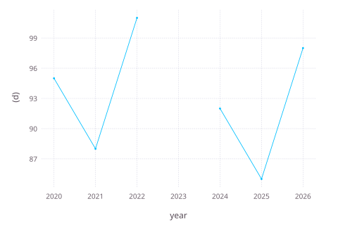
UnicodePlots
visualize(events, :year, :doy;
backend = :UnicodePlots,
kind = :scatterline, legend = false) ┌────────────────────────────────────────┐
101 │⠀⠀⠀⠀⠀⠀⠀⠀⠀⠀⠀⠀⢠⚬⠀⠀⠀⠀⠀⠀⠀⠀⠀⠀⠀⠀⠀⠀⠀⠀⠀⠀⠀⠀⠀⠀⠀⠀⠀⠀│
│⠀⠀⠀⠀⠀⠀⠀⠀⠀⠀⠀⠀⡜⠀⠀⠀⠀⠀⠀⠀⠀⠀⠀⠀⠀⠀⠀⠀⠀⠀⠀⠀⠀⠀⠀⠀⠀⠀⠀⠀│
│⠀⠀⠀⠀⠀⠀⠀⠀⠀⠀⠀⢰⠁⠀⠀⠀⠀⠀⠀⠀⠀⠀⠀⠀⠀⠀⠀⠀⠀⠀⠀⠀⠀⠀⠀⠀⠀⠀⠀⚬│
│⠀⠀⠀⠀⠀⠀⠀⠀⠀⠀⠀⡎⠀⠀⠀⠀⠀⠀⠀⠀⠀⠀⠀⠀⠀⠀⠀⠀⠀⠀⠀⠀⠀⠀⠀⠀⠀⠀⠀⡸│
│⠀⠀⠀⠀⠀⠀⠀⠀⠀⠀⢰⠁⠀⠀⠀⠀⠀⠀⠀⠀⠀⠀⠀⠀⠀⠀⠀⠀⠀⠀⠀⠀⠀⠀⠀⠀⠀⠀⢀⠇│
│⚬⠀⠀⠀⠀⠀⠀⠀⠀⠀⡇⠀⠀⠀⠀⠀⠀⠀⠀⠀⠀⠀⠀⠀⠀⠀⠀⠀⠀⠀⠀⠀⠀⠀⠀⠀⠀⠀⡸⠀│
│⠘⡄⠀⠀⠀⠀⠀⠀⠀⢸⠀⠀⠀⠀⠀⠀⠀⠀⠀⠀⠀⠀⠀⠀⠀⠀⠀⠀⠀⠀⠀⠀⠀⠀⠀⠀⠀⢠⠃⠀│
(d) │⠀⠘⡄⠀⠀⠀⠀⠀⢀⠇⠀⠀⠀⠀⠀⠀⠀⠀⠀⠀⠀⠀⠀⠀⠀⠀⠀⠀⠀⠀⠀⠀⠀⠀⠀⠀⠀⡜⠀⠀│
│⠀⠀⠘⡄⠀⠀⠀⠀⡸⠀⠀⠀⠀⠀⠀⠀⠀⠀⠀⠀⠀⠀⠀⠀⠀⠀⚬⡀⠀⠀⠀⠀⠀⠀⠀⠀⢠⠃⠀⠀│
│⠀⠀⠀⠘⡄⠀⠀⢀⠇⠀⠀⠀⠀⠀⠀⠀⠀⠀⠀⠀⠀⠀⠀⠀⠀⠀⠀⠱⡀⠀⠀⠀⠀⠀⠀⠀⡎⠀⠀⠀│
│⠀⠀⠀⠀⠘⡄⠀⡜⠀⠀⠀⠀⠀⠀⠀⠀⠀⠀⠀⠀⠀⠀⠀⠀⠀⠀⠀⠀⠱⡀⠀⠀⠀⠀⠀⢰⠁⠀⠀⠀│
│⠀⠀⠀⠀⠀⠘⣤⠃⠀⠀⠀⠀⠀⠀⠀⠀⠀⠀⠀⠀⠀⠀⠀⠀⠀⠀⠀⠀⠀⠱⡀⠀⠀⠀⠀⡎⠀⠀⠀⠀│
│⠀⠀⠀⠀⠀⠀⚬⠀⠀⠀⠀⠀⠀⠀⠀⠀⠀⠀⠀⠀⠀⠀⠀⠀⠀⠀⠀⠀⠀⠀⠱⡀⠀⠀⢸⠀⠀⠀⠀⠀│
│⠀⠀⠀⠀⠀⠀⠀⠀⠀⠀⠀⠀⠀⠀⠀⠀⠀⠀⠀⠀⠀⠀⠀⠀⠀⠀⠀⠀⠀⠀⠀⠱⡀⠀⡇⠀⠀⠀⠀⠀│
85 │⠀⠀⠀⠀⠀⠀⠀⠀⠀⠀⠀⠀⠀⠀⠀⠀⠀⠀⠀⠀⠀⠀⠀⠀⠀⠀⠀⠀⠀⠀⠀⠀⠘⚬⠀⠀⠀⠀⠀⠀│
└────────────────────────────────────────┘
⠀2020⠀⠀⠀⠀⠀⠀⠀⠀⠀⠀⠀⠀⠀⠀⠀⠀⠀⠀⠀⠀⠀⠀⠀⠀⠀⠀⠀⠀⠀⠀⠀⠀2026⠀
⠀⠀⠀⠀⠀⠀⠀⠀⠀⠀⠀⠀⠀⠀⠀⠀⠀⠀⠀year⠀⠀⠀⠀⠀⠀⠀⠀⠀⠀⠀⠀⠀⠀⠀⠀⠀⠀⠀ If no finite values are available for a range that Cropbox must infer, it raises an ArgumentError. Supply ylim = (1, 366), for example, to show a terminal event series that is entirely NaN. Observation–estimate plots use lim for their common range. Regular Makie plots retain Makie's own automatic limits, including its defaults for an empty series. Explicit limits and the existing empty/missing defaults are unchanged.
Interactive parameter controls
The callback form receives a configuration made from the current widget values:
manipulate(c -> visualize(Growth, :time, :mass;
config = c,
stop = 12u"hr",
kind = :line,
);
parameters = Growth => :rate => 0:0.25:2,
config = Growth => :rate => 1,
)The convenience form sends its positional and remaining keyword arguments to visualize:
manipulate(Growth, :time, :mass;
parameters = Growth => :rate => 0:0.25:2,
config = Growth => :rate => 1,
stop = 12u"hr",
kind = :line,
)Numeric ranges and arrays make sliders; arrays of symbols or enum values and dictionaries make drop-down controls; Booleans make check boxes. Dictionary keys are the displayed labels and their values are passed to the callback. An explicit config sets the initial selection; otherwise sliders start at the middle element and drop-down controls start at the first option.
Slider readouts update while dragging, but the model is recalculated only when the change is committed, such as when the mouse button is released. The callback receives the selected values with their model units restored, merged with the baseline configuration.
Callbacks can also return numbers, strings, tables, or other displayable values:
manipulate(c -> c[:Growth][:rate];
parameters = Growth => :rate => 0:0.25:2,
config = Growth => :rate => 1,
)JupyterLab 4 and Notebook 7 need jupyter-server-proxy installed in the Python environment that runs Jupyter:
python -m pip install jupyter-server-proxyRestart the Jupyter server after installation. Cropbox's Docker image includes this dependency. No WebIO extension, separate Bonito import, or widget macro is needed: execute the manipulate(...) cell to display the controls and plot. A live Julia kernel is required for recalculation; saved notebook or HTML output does not run the model on its own.
Each IJulia output uses an isolated frame and connection so widgets in different notebooks do not share browser state. The manipulate(...) call is unchanged.
The Docker image uses notebook-relative proxy URLs, so forwarding Jupyter to a different host port does not require a widget setup cell.
With the default Bonito configuration, Cropbox requests an automatically assigned port before displaying the first widget. Separate notebook kernels can therefore run widgets at the same time without selecting ports manually. An existing Bonito server, a nondefault port, or an explicit proxy is left unchanged.
When updating older workshop or course notebooks, remove this WebIO initialization cell:
Cropbox.Interact.WebIO.setup(:ijulia)It initialized WebIO in the older notebook/sysimage environment. Interact is no longer a Cropbox dependency, so that line now errors. It does not need a replacement for an ordinary first run. Archived notebooks using their original Cropbox environment should keep their original setup.
A normal browser refresh can reconnect while the kernel and widget session remain alive. Saved output can show the initial values rather than the last live selection; re-run the relevant manipulate(...) cell when resuming work. If controls remain unresponsive, recover without restarting Julia by running:
Cropbox.reset_manipulate()Then re-run the interactive output cells. This resets all Bonito widget sessions in the current Julia kernel, not the model definitions or other Julia variables. Existing calibration results remain available; there is no need to restart the kernel or run every cell again. Widget selections return to each call's initial configuration. Existing port and proxy settings are preserved. Do not run this inside each manipulate call. This is a recovery step, not a required initialization cell or a fix for saved outputs. An upstream fix is proposed in Bonito #423.
For teaching notebooks, keep a separate cell containing this command, labelled "Run only if widgets stop responding after a refresh". Students can run that cell and then the desired manipulate(...) cells without remembering a recovery command. Skip it during normal use.
Outside IJulia, manipulate still returns a Bonito App for an HTML-capable display, rather than silently returning a single static plot.
Treat a widget as an exploration tool. Save the selected values as an explicit Config before using them in a reproducible analysis.